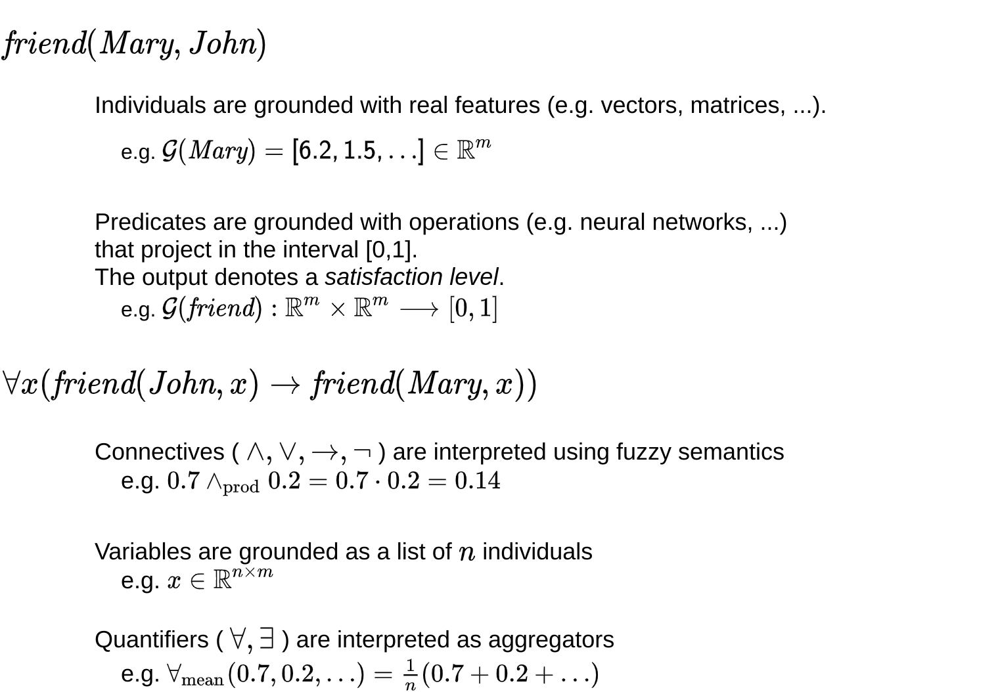

LTNtorch’s documentation
Welcome to the LTNtorch’s documentation!
LTNtorch is a fully tested and well documented PyTorch implementation of Logic Tensor Networks (LTNs), a Neural-Symbolic approach which allows learning neural networks using the satisfaction of a First-Order Logic (FOL) knowledge base as an objective.
The documentation is organized as follows:
Notes: contains some information that may be useful for those unfamiliar with the LTNtorch framework;
LTNtorch’s modules:
ltn.core, which contains the definition of constants, variables, predicates, functions, connectives, and quantifiers;
ltn.fuzzy_ops, which contains the definition of some of the most common fuzzy semantics (connective operators and aggregators).
Grounding in Logic Tensor Networks
To make learning possible, LTN uses a differentiable first-order logic language, called Real Logic, which enables the incorporation of data and logic.
Real Logic defines the concept of grounding (different from the grounding of logic), which is a mapping from the logical domain (i.e., constants, variables, and logical symbols) to tensors in the Real field or operations based on tensors. These operations could be, for instance, mathematical functions or learnable neural networks. In other words, a grounding, denoted as \(\mathcal{G}\), is a function which maps a logical symbol into a real tensor or an operation on tensors.
In particular, the grounding is defined as follows. Let us assume that \(c\) is a constant, \(x\) is a logical variable, \(P\) is a predicate, and \(f\) is a logical function:
\(\mathcal{G}(c) = \mathbb{R}^{d_1 \times \dots \times d_n}\): a logical constant is grounded as a tensor (individual) of any order (e.g., \(\mathbb{R}^4$ or $\mathbb{R}^{5 \times 4 \times 4}\));
\(\mathcal{G}(x) = \mathbb{R}^{m \times d}\): a logical variable is grounded as a sequence of \(m\) tensors (individuals) of the same shape \(d\);
\(\mathcal{G}(f \mid \theta) = x \mapsto MLP_{\theta}(x)\): a logical function is grounded as a (learnable) mathematical function which takes as input some tensors (individuals) and returns a tensor. In this definition, \(\theta\) are the learnable parameters of the function, while \(MLP_{\theta}\) is the neural network representing the function, parametrized by \(\theta\). Note that the given definition has one input \(x\), however, an LTN function can take multiple inputs;
\(\mathcal{G}(P \mid \theta) = x \mapsto \sigma (MLP_{\theta}(x))\): a logical formula (atomic or not) is grounded as a mathematical function which takes as input some tensors (individuals) and returns a value in [0., 1.]. In this case, the logistic function \(\sigma\) assures the output to be in the range [0., 1.], resulting in a value which can be interpreted as a fuzzy truth value. Note that the given definition has one input \(x\), however, an LTN predicate (or formula) can take multiple inputs.
The grounding defines also how the logical connectives (\(\land, \lor, \lnot, \implies, \leftrightarrow\)) and quantifiers (\(\forall, \exists\)) are mapped in the Real domain. In particular, logical connectives are grounded using fuzzy logic semantics, while quantifiers are grounded using fuzzy aggregators. Please, carefully read the paper if you have some doubts on these notions.
Examples of possible groundings are showed in the figure below. In particular, \(friend(Mary, John)\) is an atomic formula (predicate), while \(\forall x (friend(John, x) \implies friend(Mary, x))\) is a closed formula (all the variables are quantified). The letter \(\mathcal{G}\), again, is the grounding, the function which maps the logical domain into the Real domain.
Introduction to Learning in Logic Tensor Networks
In order to train a Logic Tensor Network, one has to define:
a First-Order Logic knowledge base containing some logical axioms;
some learnable predicates, functions, and/or logical constants appearing in the axioms;
some data.
Given these three components, the LTN workflow is the following:
grounding phase: data is used to ground (instantiate) the logical axioms included in the knowledge base;
forward phase: the truth values of the logical axioms are computed based on the given grounding (instantiation);
aggregation phase: the truth values of the axioms are aggregated to compute the overall satisfaction level of the knowledge base;
loss function computation: the gap between the overall satisfaction level and the truth (1) has to be minimized;
backward phase: the parameters of the learnable predicates, functions, and/or constants are changed in such a way to maximize the overall satisfaction level.
The training ends up with a solution which maximally satisfies all the logical axioms in the knowledge base. This tutorial shows how to use the satisfaction of a First-Order Logic knowledge base as an objective to learn a Logic Tensor Network.
In this documentation, you will find how to create a First-Order Logic knowledge base containing learnable predicates (ltn.core.Predicate),
functions (ltn.core.Function), and/or constants (ltn.core.Constant) using LTNtorch.
LTN objects
In LTNtorch, non-logical symbols (constants and variables) and the output of logical symbols (predicates, functions,
formulas, connectives, and quantifiers) are wrapped inside ltn.core.LTNObject instances.
An LTNObject represents a generic symbol (non-logical or logical) used by LTNtorch. Every LTNObject instance is defined by two important attributes:
value, which contains the grounding of the symbol (LTNObject). For example, if the grounding of variable \(x\) is \(\mathcal{G}(x) = [1., 2., 3.]\), then the value attribute for variable \(x\) will contain the vector \([1., 2., 3.]\);
free_vars, which contains the list of the labels of the free variables contained in the LTNObject instance. For example, if we have the formula \(\forall x P(x, y)\), the free_vars attribute for this formula will be [‘y’]. In fact, \(x\) is quantified by \(\forall\), while \(y\) is not quantified, namely it is a free variable.
For those unfamiliar with logic, a free variable is a variable which is not quantified by a universal (\(\forall\)) or existential (\(\exists\)) quantifier.
LTN broadcasting
LTN predicate case
In LTNtorch, when a predicate (ltn.core.Predicate), function (ltn.core.Function), or connective (ltn.core.Connective) is
called, the framework automatically performs the broadcasting of the inputs.
To make a simple example, assume that we have two variables, \(x\) and \(y\), with the following groundings:
\(\mathcal{G}(x)=[[1.6, 1.8, 2.3], [9.3, 4.5, 3.4]] \in \mathbb{R}^{2 \times 3}\);
\(\mathcal{G}(y)=[[1.2, 1.3, 2.7, 10.4], [4.3, 5.6, 9.5, 1.3], [5.4, 1.5, 9.5, 8.4]] \in \mathbb{R}^{3 \times 4}`\).
Variable \(x\) has two individuals with three features each, while variable \(y\) has three individuals with four features each.
Now, let us assume that we have a binary predicate \(P(a, b)\), grounded as \(\mathcal{G}P(a, b | \theta) = a, b \mapsto \sigma(MLP_{\theta}(a, b))\). \(P(a, b)\) is a learnable predicate which maps from \(\mathbb{R}^7\) to \([0., 1.]\). In the notation, \(MLP_{\theta}\) is a neural network, parametrized by \(\theta\), with 7 input neurons, some hidden layers, and 1 output neuron. At the last layer has been applied a logistic function to assure the output to be in the range \([0., 1.]\). By doing so, the output of \(P(a, b)\) can be interpreted as fuzzy truth value.
Now, suppose that we want to compute \(P(x, y)\). LTNtorch automatically broadcasts the two variables before computing the predicate. After the broadcasting, we will have the following inputs for our predicate:
\(\begin{bmatrix} 1.6 & 1.8 & 2.3\\ 1.6 & 1.8 & 2.3\\ 1.6 & 1.8 & 2.3\\ 9.3 & 4.5 & 3.4\\ 9.3 & 4.5 & 3.4\\ 9.3 & 4.5 & 3.4 \end{bmatrix} \in \mathbb{R}^{6 \times 3}\) for \(x\), and \(\begin{bmatrix} 1.2 & 1.3 & 2.7 & 10.4\\ 4.3 & 5.6 & 9.5 & 1.3\\ 5.4 & 1.5 & 9.5 & 8.4\\ 1.2 & 1.3 & 2.7 & 10.4\\ 4.3 & 5.6 & 9.5 & 1.3\\ 5.4 & 1.5 & 9.5 & 8.4 \end{bmatrix} \in \mathbb{R}^{6 \times 4}\) for \(y\).
Now, it is possible to observe that if we concatenate these two tensors on the first dimension (torch.cat([x, y], dim=1)), we obtain the following input for our predicate:
\(\begin{bmatrix} 1.6 & 1.8 & 2.3 & 1.2 & 1.3 & 2.7 & 10.4\\ 1.6 & 1.8 & 2.3 & 4.3 & 5.6 & 9.5 & 1.3\\ 1.6 & 1.8 & 2.3 & 5.4 & 1.5 & 9.5 & 8.4\\ 9.3 & 4.5 & 3.4 & 1.2 & 1.3 & 2.7 & 10.4\\ 9.3 & 4.5 & 3.4 & 4.3 & 5.6 & 9.5 & 1.3\\ 9.3 & 4.5 & 3.4 & 5.4 & 1.5 & 9.5 & 8.4 \end{bmatrix} \in \mathbb{R}^{6 \times 7}\).
This tensor contains all the possible combinations of the individuals of the two variables, that are 6. After the computation of the predicate, LTNtorch organizes the output in a tensor \(\mathbf{out} \in [0., 1.]^{2 \times 3}\), where the first dimension is related with variable \(x\), while the second dimension with variable \(y\). In \(\mathbf{out}[0, 0]\) there will be the result of the evaluation of \(P(x, y)\) on the first individual of \(x\), namely \([1.6, 1.8, 2.3]\), and first individual of \(y\), namely \([1.2, 1.3, 2.7, 10.4]\), in \(\mathbf{out}[0, 1]\) there will be the result of the evaluation of \(P(x, y)\) on the first individual of \(x\), namely \([1.6, 1.8, 2.3]\), and second individual of \(y\), namely \([4.3, 5.6, 9.5, 1.3]\), and so forth.
To conclude this note, in LTNtorch, the output of predicates, functions, connectives, and quantifiers are LTNObject instances. In the case of our example, the output of predicate \(P\) is an LTNObject with the following attributes:
value \(\in [0., 1.]^{2 \times 3}\);
free_vars = [‘x’, ‘y’].
Note that we have analyzed just an atomic formula (predicate) in this scenario. Since the variables appearing in the formula are not quantified, the free variables in the output are both \(x\) and \(y\). If instead of \(P(x, y)\) we had to compute \(\forall x P(x, y)\), the free_vars attribute would have been equal to [‘y’]. Finally, if we had to compute \(\forall x \forall y P(x, y)\), the free_vars attribute would have been an empty list.
LTN function case
The same scenario explained above can be applied to an LTN function (ltn.core.Function) instead of an LTN predicate (ltn.core.Predicate). Suppose we have the same
variables, \(x\) and \(y\), with the same groundings, \(\mathcal{G}(x)\) and \(\mathcal{G}(y)\).
Then, suppose we have a 2-ary (2 inputs) logical function \(f\), grounded as
\(\mathcal{G}f(a, b | \theta) = a, b \mapsto MLP_{\theta}(a, b)\).
In this case, \(MLP_{\theta}\) is a neural network, parametrized by \(\theta\), with 7 input neurons, some hidden layers, and five output neurons. In other words, \(f\) is a learnable function which maps from individuals in \(\mathbb{R}^7\) to individuals in \(\mathbb{R}^5\). Note that, in this case, we do not have applied a logistic function to the output. In fact, logical functions do not have the constraint of having outputs in the range \([0., 1.]\).
LTNtorch applies the same broadcasting that we have seen above to the inputs of function \(f\). The only difference is on how the output is organized. In the case of an LTN function, the output is organized in a tensor where the first \(k\) dimensions are related with the variables given in input, while the remaining dimensions are related with the features of the individuals in output.
In our scenario, the output of \(f(x, y)\) is a tensor \(\mathbf{out} \in \mathbb{R}^{2 \times 3 \times 5}\). The first dimension is related with variable \(x\), the second dimension with variable \(y\), while the third dimension with the features of the individuals in output. In \(\mathbf{out}[0, 0]\) there will be the result of the evaluation of \(f(x, y)\) on the first individual of \(x\), namely \([1.6, 1.8, 2.3]\), and first individual of \(y\), namely \([1.2, 1.3, 2.7, 10.4]\), in \(\mathbf{out}[0, 1]\) there will be the result of the evaluation of \(f(x, y)\) on the first individual of \(x\), namely \([1.6, 1.8, 2.3]\), and second individual of \(y\), namely \([4.3, 5.6, 9.5, 1.3]\), and so forth.
LTN connective case
LTNtorch applies the LTN broadcasting also before computing a logical connective. To make the concept clear, let us make a simple example.
Suppose that we have variables \(x\), \(y\), \(z\), and \(u\), with groundings:
\(mathcal{G}(x) \in \mathbb{R}^{2 \times 3}\), namely \(x\) contains two individuals in \(\mathbb{R}^3\);
\(mathcal{G}(y) \in \mathbb{R}^{4 \times 3 \times 5}\), namely \(y\) contains four individuals in \(\mathbb{R}^{3 \times 5}\);
\(mathcal{G}(z) \in \mathbb{R}^{3 \times 5}\), namely \(z\) contains three individuals in \(\mathbb{R}^5\);
\(mathcal{G}(u) \in \mathbb{R}^{6 \times 2}\), namely \(u\) contains six individuals in \(\mathbb{R}^2\).
Then, suppose that we have two binary predicates, \(P(a, b)\) and \(Q(a, b)\). \(P\) maps from \(\mathbb{R}^18\) to \([0., 1.]\), while \(Q\) maps from \(\mathbb{R}^7\) to \([0., 1.]\).
Suppose now that we want to compute the formula: \(P(x, y) \land Q(z, u)\). In order to evaluate this formula, LTNtorch follows the following procedure:
it computes the result of the atomic formula \(P(x, y)\), which is a tensor \(\mathbf{out_1} \in [0., 1.]^{2 \times 4}\). Note that before the computation of \(P(x, y)\), LTNtorch performed the LTN broadcasting of variables \(x\) and \(y\);
it computes the result of the atomic formula \(Q(z, u)\), which is a tensor \(\mathbf{out_2} \in [0., 1.]^{3 \times 6}\). Note that before the computation of \(P(z, u)\), LTNtorch performed the LTN broadcasting of variables \(z\) and \(u\);
it performs the LTN broadcasting of \(\mathbf{out_1}\) and \(\mathbf{out_2}\);
it applies the fuzzy conjunction \(\mathbf{out_1} \land_{fuzzy} \mathbf{out_2}\). The result is a tensor \(\mathbf{out} \in [0., 1.]^{2 \times 4 \times 3 \times 6}\).
Notice that the output of a logical connective is always wrapped into an LTN object, like it happens for predicates and functions. In this simple example, the LTNObject produced by the fuzzy conjunction has the following attributes:
value = \(\mathbf{out}\);
free_vars = [‘x’, ‘y’, ‘z’, ‘u’].
Notice that free_vars contains the labels of all the variables appearing in \(P(x, y) \land Q(z, u)\). This is due to the fact that all the variables are free in the formula since are not quantified by any logical quantifier. Notice also that \(\mathbf{out}\) has four dimensions, one for each variable appearing in the formula. These dimensions can be indexed to retrieve the evaluation of \(P(x, y) \land Q(z, u)\) on a specific combination of individuals of \(x,y,z,u\). For example, \(\mathbf{out}[0, 0, 0, 0]\) contains the evaluation of \(P(x, y) \land Q(z, u)\) on the first individuals of all the variables, while \(\mathbf{out}[0, 1, 0, 0]\) contains the evaluation of \(P(x, y) \land Q(z, u)\) on the first individuals of \(x,z,u\) and second individual of \(y\).
Quantification in Logic Tensor Networks
Base quantification
The logical quantifiers, namely \(\forall\) and \(\exists\), are implemented in LTN using fuzzy aggregators. An
example of fuzzy aggregator is the mean. The ltn.fuzzy_ops module contains the implementation
of the most common fuzzy aggregators.
In the note regarding the LTN broadcasting, we have seen that the output of logical predicates, for example \(P(x, y)\), is organized in a tensor where the dimensions are related with the free variables appearing in the predicate. In the case of the atomic formula \(P(x, y)\), the result is a tensor \(\mathbf{out} \in [0., 1.]^{m \times n}\), where \(m\) is the number of individuals of variable \(x\), while \(n\) is the number of individuals of variable \(y\).
Notice that:
the tensor \(\mathbf{out}\) has two dimensions because the atomic formula \(P(x, y)\) has two free variables, namely \(x\) and \(y\);
variable \(x\) has been placed on the first dimension, while variable \(y\) in the second dimension, according to their order of appearance in the atomic formula;
the output of the predicate is wrapped inside an LTN object where the value attribute contains the tensor \(\mathbf{out}\), while the free_vars attribute contains the list [‘x’, ‘y’].
Now, we can extend this example with the formula: \(\forall x P(x, y)\). In order to compute the result of this formula, LTNtorch must compute the result of the atomic formula \(P(x, y)\) first, and then apply a fuzzy aggregator to this result for performing the desired quantification on variable \(x\).
We know that the output of \(P(x, y)\) is the tensor \(\mathbf{out} \in [0., 1.]^{m \times n}\), and that the first dimension is related to variable \(x\) while second dimension to variable \(y\). In order to perform the quantification of \(P(x, y)\) on variable \(x\), LTNtorch simply performs an aggregation of tensor \(\mathbf{out}\) on the first dimension. Let us assume that the selected fuzzy aggregator for \(\forall\) is the mean. LTNtorch simply computes torch.mean(out, dim=0), where out is the tensor \(\mathbf{out}\) and dim=0 means that we aggregate on the first dimension of out, namely the dimension related to variable \(x\).
After the application of the quantifier, a new LTN object is created. The attribute value will contain the result of \(\forall x P(x, y)\), that will be the tensor \(\mathbf{out}' \in [0., 1.]^n\), while the attribute free_vars will contain the list [‘y’].
Notice that:
the result has one less dimension within respect to the result of \(P(x, y)\). This is due to the fact that we have aggregated one of the two dimensions, namely the dimension of \(x\). The only dimension left is the dimension related with \(y\), and it is for this reason that \(\mathbf{out}\) is now a vector in \([0., 1.]^n\);
the attribute free_vars contains now only variable \(y\). This is due to the fact that variable \(x\) is not free anymore since it has been quantified by \(\forall\).
Finally, notice that if the formula would have been \(\forall x \forall y P(x, y)\), the quantification would have been torch.mean(out, dim=(0,1)), namely both dimensions of \(\mathbf{out}\) would have been aggregated. Also, the output would have been a scalar in \([0., 1.]\) and no more free variables would have been in the formula, since both variables have been quantified.
Diagonal quantification
Given 2 (or more) variables, there are scenarios where one wants to express statements about specific pairs (or tuples) of values only, instead of all the possible combinations of values of the variables. This is allowed in LTN thanks to the concept of diagonal quantification.
To make the concept clear, let us make a simple example. Suppose that we have the formula \(\forall x \forall y P(x, y)\). Suppose also that variables \(x\) and \(y\) have the same number of individuals, and that this number is \(n\).
With the usual LTN broadcasting, the predicate \(P(x, y)\) is computed on all the possible combinations of individuals of \(x\) and \(y\). In other words, the result of \(P(x, y)\) would be a tensor \(\mathbf{out} \in [0., 1.]^{n \times n}\). Then, after the quantification on both \(x\) and \(y\), we obtain a scalar in \([0., 1.]\).
With diagonal quantification (\(\forall Diag(x, y) P(x, y)\)), instead, predicate \(P(x, y)\) is computed only on the tuples \((x_i, y_i)\), where \(x_i\) is the \(i_{th}\) individual of \(x\), while \(y_i\) is the \(i_{th}\) individual of \(y\). In other words, the output would be a tensor \(\mathbf{out} \in [0., 1.]^n\). Notice that the output has one single dimension since the predicate has been computed on \(n\) tuples only, namely the tuples created constructing a one-to-one correspondence between the individuals of \(x\) and the individuals \(y\). At the end, after the quantification, a scalar is obtained like in the case with the previous case.
The advantages of diagonal quantification are mani-fold:
it is a way to disable the LTN broadcasting. Even if it has been designed to work with quantified statements, it could serve as a way to temporarily disable the LTN broadcasting when computing some formulas. In fact, sometimes it is not necessary to compute a predicate on all the possible combinations of individuals of the variables in input;
it is more efficient compared to the usual quantification since it allows to avoid to compute a predicate on all the possible combinations of individuals of the variables appearing in the predicate;
it is useful when dealing with variables which represent machine learning examples. In many tasks, the dataset comes with some labelled examples. One variable could contain the examples, while another variable could contain the labels of the examples. With diagonal quantification we are able to force LTNtorch to use these variables with a one-to-one correspondence. This allows to avoid to compute formulas on combination of individuals which do not make any sense, for example a data sample labelled with a wrong label.
Notice that diagonal quantification expects the variables to have the same number of individuals, since a one-to-one correspondence has to be created.
In order to use diagonal quantification in LTNtorch, it is possible to use ltn.core.diag().
Guarded quantification
In some cases, it could be useful to quantify formulas only on variables’ individuals which satisfy a given condition. This is allowed in LTN by using the guarded quantification.
To make the concept clear, let us make a simple example. Suppose that we have a binary predicate \(P(a, b)\). Then, we have two variables, \(x\) and \(y\), containing sequences of points in \(\mathbb{R}^2\). Specifically, \(\mathcal{G}(x) \in \mathbb{R}^{m_1 \times 2}\) and \(\mathcal{G}(y) \in \mathbb{R}^{m_2 \times 2}\). So, \(x\) contains \(m_1\) points, while \(m_2\) contains \(m_2\) points.
We have already seen that LTN allows to compute the formula: \(\forall x \forall y P(x, y)\). Also, we know that LTNtorch firstly computes \(P(x, y)\) and then aggregates on the dimensions specified by the quantified variables.
Suppose now that we want to compute the same formula \(\forall x \forall y P(x, y)\) but quantifying only on the pairs of points whose distance is lower than a certain threshold. We represent this threshold with the constant \(th\). In Real Logic, it is possible to formalize this statement as \(\forall x \forall y : (dist(x, y) < th) \text{ } P(x, y)\), where \(dist\) is a function which computes the Euclidean distance between two points in \(\mathbb{R}^2\).
In order to compute this formula, LTNtorch follows this procedure:
it computes the result of the atomic formula \(P(x, y)\), which is a tensor \(\mathbf{out} \in [0., 1.]^{m_1 \times m_2}\);
it masks the truth values in the tensor \(\mathbf{out}\) which do not satisfy the given condition (\(dist(x, y) < th\));
it aggregates the tensor \(mathbf{out}\) on both dimensions, since both variables have been quantified. In this aggregation, the truth values masked by the previous step are not considered. Since both variables have been quantified, the result is a scalar in \([0, 1]\).
For applying guarded quantification in LTNtorch, see ltn.core.Quantifier. In particular, see mask_fn
and cond_vars parameters.
Stable Fuzzy Semantics
In LTNtorch, connectives and quantifiers are grounded using fuzzy semantics. Despite fuzzy logic enables the incorporation of logic and learning, not all fuzzy semantics are equally suited for gradient-descent optimization. Many fuzzy logic operators can lead to vanishing or exploding gradients. Some operators are also single-passing, in that they propagate gradients to only one input at a time.
If you are interested in an analysis of differentiable fuzzy semantics and gradient problems in LTN, see this tutorial.
In the following, there are some examples of gradient problems in LTN:
the Gougen fuzzy conjunction (
ltn.fuzzy_ops.AndProd) has vanishing gradients on the edge case \(x = y = 0\);the Gougen fuzzy disjunction (
ltn.fuzzy_ops.OrProbSum) has vanishing gradients on the edge case \(x = y = 1\);the Gougen fuzzy implication (
ltn.fuzzy_ops.ImpliesGoguen) has vanishing gradients on the edge case \(x = 0, y = 1\);for other examples, refer to the appendix of the LTN paper.
To address these problems, LTNtorch provides additional stable versions for the fuzzy operators and aggregators with
gradient problems (unstable operators). In particular, the stable version can be accessed by setting the boolean
parameter stable of the constructor method of the operator to True. If the parameter stable does not appear in the
signature of the constructor, it means that the selected operator does not have gradient problems, so a stable version
for that specific operator is not required. See ltn.fuzzy_ops.AndProd for an example of
unstable operator. Notice the parameter stable appears in the signature of the constructor.
The stable versions are obtained in LTNtorch by applying the following projection functions to the inputs of the operators:
\(\pi_0:[0,1] \rightarrow ]0,1]: x \rightarrow(1-\epsilon) x+\epsilon\), to avoid having zeros in input to the operator;
\(\pi_1:[0,1] \rightarrow [0,1[: x \rightarrow(1-\epsilon) x\), to avoid having ones in input to the operator.
In LTNtorch, \(\epsilon\) is set to 0.0001.
ltn.core
Members
|
Class representing a generic LTN object. |
|
Class representing an LTN constant. |
|
Class representing an LTN variable. |
|
Class representing an LTN predicate. |
|
Class representing LTN functions. |
|
Sets the given LTN variables for diagonal quantification. |
|
Resets the LTN broadcasting for the given LTN variables. |
|
Class representing an LTN connective. |
|
Class representing an LTN quantifier. |
The ltn.core module contains the main functionalities of LTNtorch. In particular, it contains the definitions of constants, variables, predicates, functions, connectives, and quantifiers.
- class ltn.core.LTNObject(value, var_labels)
Bases:
objectClass representing a generic LTN object.
In LTNtorch, LTN objects are constants, variables, and outputs of predicates, formulas, functions, connectives, and quantifiers.
- Parameters:
- value
torch.Tensor The grounding (value) of the LTN object.
- var_labels
listofstr The labels of the free variables contained in the LTN object.
- value
- Raises:
TypeErrorRaises when the types of the input parameters are incorrect.
Notes
in LTNtorch, the groundings of the LTN objects (symbols) are represented using PyTorch tensors, namely
torch.Tensorinstances;LTNObject is used by LTNtorch internally. The user should not create LTNObject instances by his/her own, unless strictly necessary.
- Attributes:
- value
torch.Tensor See value parameter.
- free_vars
listofstr See var_labels parameter.
- value
- shape()
Returns the shape of the grounding of the LTN object.
- Returns:
torch.SizeThe shape of the grounding of the LTN object.
- class ltn.core.Constant(value, trainable=False)
Bases:
LTNObjectClass representing an LTN constant.
An LTN constant denotes an individual grounded as a tensor in the Real field. The individual can be pre-defined (fixed data point) or learnable (embedding).
- Parameters:
- value
torch.Tensor The grounding of the LTN constant. It can be a tensor of any order.
- trainable
bool, default=False Flag indicating whether the LTN constant is trainable (embedding) or not.
- value
Notes
LTN constants are LTN objects.
ltn.core.Constantis a subclass ofltn.core.LTNObject;the attribute free_vars for LTN constants is an empty list, since a constant does not have variables by definition;
if parameter trainable is set to True, the LTN constant becomes trainable, namely an embedding;
if parameter trainable is set to True, then the value attribute of the LTN constant will be used as an initialization for the embedding of the constant.
Examples
Non-trainable constant
>>> import ltn >>> import torch >>> c = ltn.Constant(torch.tensor([3.4, 5.4, 4.3])) >>> print(c) Constant(value=tensor([3.4000, 5.4000, 4.3000]), free_vars=[]) >>> print(c.value) tensor([3.4000, 5.4000, 4.3000]) >>> print(c.free_vars) [] >>> print(c.shape()) torch.Size([3])
Trainable constant
>>> t_c = ltn.Constant(torch.tensor([[3.4, 2.3, 5.6], ... [6.7, 5.6, 4.3]]), trainable=True) >>> print(t_c) Constant(value=tensor([[3.4000, 2.3000, 5.6000], [6.7000, 5.6000, 4.3000]], requires_grad=True), free_vars=[]) >>> print(t_c.value) tensor([[3.4000, 2.3000, 5.6000], [6.7000, 5.6000, 4.3000]], requires_grad=True) >>> print(t_c.free_vars) [] >>> print(t_c.shape()) torch.Size([2, 3])
- class ltn.core.Variable(var_label, individuals, add_batch_dim=True)
Bases:
LTNObjectClass representing an LTN variable.
An LTN variable denotes a sequence of individuals. It is grounded as a sequence of tensors (groundings of individuals) in the real field.
- Parameters:
- var_label
str Name of the variable.
- individuals
torch.Tensor Sequence of individuals (tensors) that becomes the grounding the LTN variable.
- add_batch_dim
bool, default=True Flag indicating whether a batch dimension (first dimension) has to be added to the vale of the variable or not. If True, a dimension will be added only if the value attribute of the LTN variable has one single dimension. In all the other cases, the first dimension will be considered as batch dimension, so no dimension will be added.
- var_label
- Raises:
TypeErrorRaises when the types of the input parameters are not correct.
ValueErrorRaises when the value of the var_label parameter is not correct.
Notes
LTN variables are LTN objects.
ltn.core.Variableis a subclass ofltn.core.LTNObject;the first dimension of an LTN variable is associated with the number of individuals in the variable, while the other dimensions are associated with the features of the individuals;
setting add_batch_dim to False is useful, for instance, when an LTN variable is used to denote a sequence of indexes (for example indexes for retrieving values in tensors);
variable labels starting with ‘_diag’ are reserved for diagonal quantification (
ltn.core.diag()).
Examples
add_batch_dim=True has no effects on the variable since its value has more than one dimension, namely there is already a batch dimension.
>>> import ltn >>> import torch >>> x = ltn.Variable('x', torch.tensor([[3.4, 4.5], ... [6.7, 9.6]]), add_batch_dim=True) >>> print(x) Variable(value=tensor([[3.4000, 4.5000], [6.7000, 9.6000]]), free_vars=['x']) >>> print(x.value) tensor([[3.4000, 4.5000], [6.7000, 9.6000]]) >>> print(x.free_vars) ['x'] >>> print(x.shape()) torch.Size([2, 2])
add_bath_dim=True adds a batch dimension to the value of the variable since it has only one dimension.
>>> y = ltn.Variable('y', torch.tensor([3.4, 4.5, 8.9]), add_batch_dim=True) >>> print(y) Variable(value=tensor([[3.4000], [4.5000], [8.9000]]), free_vars=['y']) >>> print(y.value) tensor([[3.4000], [4.5000], [8.9000]]) >>> print(y.free_vars) ['y'] >>> print(y.shape()) torch.Size([3, 1])
add_batch_dim=False tells to LTNtorch to not add a batch dimension to the value of the variable. This is useful when a variable contains a sequence of indexes.
>>> z = ltn.Variable('z', torch.tensor([1, 2, 3]), add_batch_dim=False) >>> print(z) Variable(value=tensor([1, 2, 3]), free_vars=['z']) >>> print(z.value) tensor([1, 2, 3]) >>> print(z.free_vars) ['z'] >>> print(z.shape()) torch.Size([3])
- class ltn.core.Predicate(model=None, func=None)
Bases:
ModuleClass representing an LTN predicate.
An LTN predicate is grounded as a mathematical function (either pre-defined or learnable) that maps from some n-ary domain of individuals to a real number in [0,1] (fuzzy), which can be interpreted as a truth value.
In LTNtorch, the inputs of a predicate are automatically broadcasted before the computation of the predicate, if necessary. Moreover, the output is organized in a tensor where each dimension is related to one variable given in input. See LTN broadcasting for more information.
- Parameters:
- model
torch.nn.Module, default=None PyTorch model that becomes the grounding of the LTN predicate.
- func
function, default=None Function that becomes the grounding of the LTN predicate.
- model
- Raises:
TypeErrorRaises when the types of the input parameters are incorrect.
ValueErrorRaises when the values of the input parameters are incorrect.
Notes
the output of an LTN predicate is always an LTN object (
ltn.core.LTNObject);LTNtorch allows to define a predicate using a trainable model or a python function, not both;
defining a predicate using a python function is suggested only for simple and non-learnable mathematical operations;
examples of LTN predicates could be similarity measures, classifiers, etc;
the output of an LTN predicate must be always in the range [0., 1.]. Outputs outside of this range are not allowed;
evaluating a predicate with one variable of \(n\) individuals yields \(n\) output values, where the \(i_{th}\) output value corresponds to the predicate calculated with the \(i_{th}\) individual;
evaluating a predicate with \(k\) variables \((x_1, \dots, x_k)\) with respectively \(n_1, \dots, n_k\) individuals each, yields a result with \(n_1 * \dots * n_k\) values. The result is organized in a tensor where the first \(k\) dimensions can be indexed to retrieve the outcome(s) that correspond to each variable;
the attribute free_vars of the LTNobject output by the predicate tells which dimension corresponds to which variable in the value of the LTNObject. See LTN broadcasting for more information;
to disable the LTN broadcasting, see
ltn.core.diag().
Examples
Unary predicate defined using a
torch.nn.Sequential.>>> import ltn >>> import torch >>> predicate_model = torch.nn.Sequential( ... torch.nn.Linear(4, 2), ... torch.nn.ELU(), ... torch.nn.Linear(2, 1), ... torch.nn.Sigmoid() ... ) >>> p = ltn.Predicate(model=predicate_model) >>> print(p) Predicate(model=Sequential( (0): Linear(in_features=4, out_features=2, bias=True) (1): ELU(alpha=1.0) (2): Linear(in_features=2, out_features=1, bias=True) (3): Sigmoid() ))
Unary predicate defined using a function. Note that torch.sum is performed on dim=1. This is because in LTNtorch the first dimension (dim=0) is related to the batch dimension, while other dimensions are related to the features of the individuals. Notice that the output of the print is Predicate(model=LambdaModel()). This indicates that the LTN predicate has been defined using a function, through the func parameter of the constructor.
>>> p_f = ltn.Predicate(func=lambda x: torch.nn.Sigmoid()(torch.sum(x, dim=1))) >>> print(p_f) Predicate(model=LambdaModel())
Binary predicate defined using a
torch.nn.Module. Note the call to torch.cat to merge the two inputs of the binary predicate.>>> class PredicateModel(torch.nn.Module): ... def __init__(self): ... super(PredicateModel, self).__init__() ... elu = torch.nn.ELU() ... sigmoid = torch.nn.Sigmoid() ... self.dense1 = torch.nn.Linear(4, 5) ... self.dense2 = torch.nn.Linear(5, 1) ... ... def forward(self, x, y): ... x = torch.cat([x, y], dim=1) ... x = self.elu(self.dense1(x)) ... out = self.sigmoid(self.dense2(x)) ... return out ... >>> predicate_model = PredicateModel() >>> b_p = ltn.Predicate(model=predicate_model) >>> print(b_p) Predicate(model=PredicateModel( (dense1): Linear(in_features=4, out_features=5, bias=True) (dense2): Linear(in_features=5, out_features=1, bias=True) ))
Binary predicate defined using a function. Note the call to torch.cat to merge the two inputs of the binary predicate.
>>> b_p_f = ltn.Predicate(func=lambda x, y: torch.nn.Sigmoid()( ... torch.sum(torch.cat([x, y], dim=1), dim=1) ... )) >>> print(b_p_f) Predicate(model=LambdaModel())
Evaluation of a unary predicate on a constant. Note that:
the predicate returns a
ltn.core.LTNObjectinstance;since a constant has been given, the LTNObject in output does not have free variables;
the shape of the LTNObject in output is empty since the predicate has been evaluated on a constant, namely on one single individual;
the attribute value of the LTNObject in output contains the result of the evaluation of the predicate;
the value is in the range [0., 1.] since it has to be interpreted as a truth value. This is assured thanks to the sigmoid function in the definition of the predicate.
>>> c = ltn.Constant(torch.tensor([0.5, 0.01, 0.34, 0.001])) >>> out = p_f(c) >>> print(type(out)) <class 'ltn.core.LTNObject'> >>> print(out) LTNObject(value=tensor(0.7008), free_vars=[]) >>> print(out.value) tensor(0.7008) >>> print(out.free_vars) [] >>> print(out.shape()) torch.Size([])
Evaluation of a unary predicate on a variable. Note that:
since a variable has been given, the LTNObject in output has one free variable;
the shape of the LTNObject in output is 2 since the predicate has been evaluated on a variable with two individuls.
>>> v = ltn.Variable('v', torch.tensor([[0.4, 0.3], ... [0.32, 0.043]])) >>> out = p_f(v) >>> print(out) LTNObject(value=tensor([0.6682, 0.5898]), free_vars=['v']) >>> print(out.value) tensor([0.6682, 0.5898]) >>> print(out.free_vars) ['v'] >>> print(out.shape()) torch.Size([2])
Evaluation of a binary predicate on a variable and a constant. Note that:
like in the previous example, the LTNObject in output has just one free variable, since only one variable has been given to the predicate;
the shape of the LTNObject in output is 2 since the predicate has been evaluated on a variable with two individuals. The constant does not add dimensions to the output.
>>> v = ltn.Variable('v', torch.tensor([[0.4, 0.3], ... [0.32, 0.043]])) >>> c = ltn.Constant(torch.tensor([0.4, 0.04, 0.23, 0.43])) >>> out = b_p_f(v, c) >>> print(out) LTNObject(value=tensor([0.8581, 0.8120]), free_vars=['v']) >>> print(out.value) tensor([0.8581, 0.8120]) >>> print(out.free_vars) ['v'] >>> print(out.shape()) torch.Size([2])
Evaluation of a binary predicate on two variables. Note that:
since two variables have been given, the LTNObject in output has two free variables;
the shape of the LTNObject in output is (2, 3) since the predicate has been evaluated on a variable with two individuals and a variable with three individuals;
the first dimension is dedicated to variable x, which is also the first one appearing in free_vars, while the second dimension is dedicated to variable y, which is the second one appearing in free_vars;
it is possible to access the value attribute for getting the results of the predicate. For example, at position (1, 2) there is the evaluation of the predicate on the second individual of x and third individuals of y.
>>> x = ltn.Variable('x', torch.tensor([[0.4, 0.3], ... [0.32, 0.043]])) >>> y = ltn.Variable('y', torch.tensor([[0.4, 0.04, 0.23], ... [0.2, 0.04, 0.32], ... [0.06, 0.08, 0.3]])) >>> out = b_p_f(x, y) >>> print(out) LTNObject(value=tensor([[0.7974, 0.7790, 0.7577], [0.7375, 0.7157, 0.6906]]), free_vars=['x', 'y']) >>> print(out.value) tensor([[0.7974, 0.7790, 0.7577], [0.7375, 0.7157, 0.6906]]) >>> print(out.free_vars) ['x', 'y'] >>> print(out.shape()) torch.Size([2, 3]) >>> print(out.value[1, 2]) tensor(0.6906)
- Attributes:
- model
torch.nn.Moduleorfunction The grounding of the LTN predicate.
- model
- forward(*inputs, **kwargs)
It computes the output of the predicate given some LTN objects in input.
Before computing the predicate, it performs the LTN broadcasting of the inputs.
- Parameters:
- inputs
tupleofltn.core.LTNObject Tuple of LTN objects for which the predicate has to be computed.
- inputs
- Returns:
ltn.core.LTNObjectAn LTNObject whose value attribute contains the truth values representing the result of the predicate, while free_vars attribute contains the labels of the free variables contained in the result.
- Raises:
TypeErrorRaises when the types of the inputs are incorrect.
ValueErrorRaises when the values of the output are not in the range [0., 1.].
- class ltn.core.Function(model=None, func=None)
Bases:
ModuleClass representing LTN functions.
An LTN function is grounded as a mathematical function (either pre-defined or learnable) that maps from some n-ary domain of individuals to a tensor (individual) in the Real field.
In LTNtorch, the inputs of a function are automatically broadcasted before the computation of the function, if necessary. Moreover, the output is organized in a tensor where the first \(k\) dimensions are related with the \(k\) variables given in input, while the last dimensions are related with the features of the individual in output. See LTN broadcasting for more information.
- Parameters:
- model
torch.nn.Module, default=None PyTorch model that becomes the grounding of the LTN function.
- func
function, default=None Function that becomes the grounding of the LTN function.
- model
- Raises:
TypeErrorRaises when the types of the input parameters are incorrect.
ValueErrorRaises when the values of the input parameters are incorrect.
Notes
the output of an LTN function is always an LTN object (
ltn.core.LTNObject);LTNtorch allows to define a function using a trainable model or a python function, not both;
defining an LTN function using a python function is suggested only for simple and non-learnable mathematical operations;
examples of LTN functions could be distance functions, regressors, etc;
differently from LTN predicates, the output of an LTN function has no constraints;
evaluating a function with one variable of \(n\) individuals yields \(n\) output values, where the \(i_{th}\) output value corresponds to the function calculated with the \(i_{th}\) individual;
evaluating a function with \(k\) variables \((x_1, \dots, x_k)\) with respectively \(n_1, \dots, n_k\) individuals each, yields a result with \(n_1 * \dots * n_k\) values. The result is organized in a tensor where the first \(k\) dimensions can be indexed to retrieve the outcome(s) that correspond to each variable;
the attribute free_vars of the LTNobject output by the function tells which dimension corresponds to which variable in the value of the LTNObject. See LTN broadcasting for more information;
to disable the LTN broadcasting, see
ltn.core.diag().
Examples
Unary function defined using a
torch.nn.Sequential.>>> import ltn >>> import torch >>> function_model = torch.nn.Sequential( ... torch.nn.Linear(4, 3), ... torch.nn.ELU(), ... torch.nn.Linear(3, 2) ... ) >>> f = ltn.Function(model=function_model) >>> print(f) Function(model=Sequential( (0): Linear(in_features=4, out_features=3, bias=True) (1): ELU(alpha=1.0) (2): Linear(in_features=3, out_features=2, bias=True) ))
Unary function defined using a function. Note that torch.sum is performed on dim=1. This is because in LTNtorch the first dimension (dim=0) is related to the batch dimension, while other dimensions are related to the features of the individuals. Notice that the output of the print is Function(model=LambdaModel()). This indicates that the LTN function has been defined using a function, through the func parameter of the constructor.
>>> f_f = ltn.Function(func=lambda x: torch.repeat_interleave( ... torch.sum(x, dim=1, keepdim=True), 2, dim=1) ... ) >>> print(f_f) Function(model=LambdaModel())
Binary function defined using a
torch.nn.Module. Note the call to torch.cat to merge the two inputs of the binary function.>>> class FunctionModel(torch.nn.Module): ... def __init__(self): ... super(FunctionModel, self).__init__() ... elu = torch.nn.ELU() ... self.dense1 = torch.nn.Linear(4, 5) ... dense2 = torch.nn.Linear(5, 2) ... ... def forward(self, x, y): ... x = torch.cat([x, y], dim=1) ... x = self.elu(self.dense1(x)) ... out = self.dense2(x) ... return out ... >>> function_model = FunctionModel() >>> b_f = ltn.Function(model=function_model) >>> print(b_f) Function(model=FunctionModel( (dense1): Linear(in_features=4, out_features=5, bias=True) ))
Binary function defined using a function. Note the call to torch.cat to merge the two inputs of the binary function.
>>> b_f_f = ltn.Function(func=lambda x, y: ... torch.repeat_interleave( ... torch.sum(torch.cat([x, y], dim=1), dim=1, keepdim=True), 2, ... dim=1)) >>> print(b_f_f) Function(model=LambdaModel())
Evaluation of a unary function on a constant. Note that:
the function returns a
ltn.core.LTNObjectinstance;since a constant has been given, the LTNObject in output does not have free variables;
the shape of the LTNObject in output is (2) since the function has been evaluated on a constant, namely on one single individual, and returns individuals in \(\mathbb{R}^2\);
the attribute value of the LTNObject in output contains the result of the evaluation of the function.
>>> c = ltn.Constant(torch.tensor([0.5, 0.01, 0.34, 0.001])) >>> out = f_f(c) >>> print(type(out)) <class 'ltn.core.LTNObject'> >>> print(out) LTNObject(value=tensor([0.8510, 0.8510]), free_vars=[]) >>> print(out.value) tensor([0.8510, 0.8510]) >>> print(out.free_vars) [] >>> print(out.shape()) torch.Size([2])
Evaluation of a unary function on a variable. Note that:
since a variable has been given, the LTNObject in output has one free variable;
the shape of the LTNObject in output is (2, 2) since the function has been evaluated on a variable with two individuls and returns individuals in \(\mathbb{R}^2\).
>>> v = ltn.Variable('v', torch.tensor([[0.4, 0.3], ... [0.32, 0.043]])) >>> out = f_f(v) >>> print(out) LTNObject(value=tensor([[0.7000, 0.7000], [0.3630, 0.3630]]), free_vars=['v']) >>> print(out.value) tensor([[0.7000, 0.7000], [0.3630, 0.3630]]) >>> print(out.free_vars) ['v'] >>> print(out.shape()) torch.Size([2, 2])
Evaluation of a binary function on a variable and a constant. Note that:
like in the previous example, the LTNObject in output has just one free variable, since only one variable has been given to the predicate;
the shape of the LTNObject in output is (2, 2) since the function has been evaluated on a variable with two individuals and returns individuals in \(\mathbb{R}^2\). The constant does not add dimensions to the output.
>>> v = ltn.Variable('v', torch.tensor([[0.4, 0.3], ... [0.32, 0.043]])) >>> c = ltn.Constant(torch.tensor([0.4, 0.04, 0.23, 0.43])) >>> out = b_f_f(v, c) >>> print(out) LTNObject(value=tensor([[1.8000, 1.8000], [1.4630, 1.4630]]), free_vars=['v']) >>> print(out.value) tensor([[1.8000, 1.8000], [1.4630, 1.4630]]) >>> print(out.free_vars) ['v'] >>> print(out.shape()) torch.Size([2, 2])
Evaluation of a binary function on two variables. Note that:
since two variables have been given, the LTNObject in output has two free variables;
the shape of the LTNObject in output is (2, 3, 2) since the function has been evaluated on a variable with two individuals, a variable with three individuals, and returns individuals in \(\mathbb{R}^2\);
the first dimension is dedicated to variable x, which is also the first one appearing in free_vars, the second dimension is dedicated to variable y, which is the second one appearing in free_vars, while the last dimensions is dedicated to the features of the individuals in output;
it is possible to access the value attribute for getting the results of the function. For example, at position (1, 2) there is the evaluation of the function on the second individual of x and third individuals of y.
>>> x = ltn.Variable('x', torch.tensor([[0.4, 0.3], ... [0.32, 0.043]])) >>> y = ltn.Variable('y', torch.tensor([[0.4, 0.04, 0.23], ... [0.2, 0.04, 0.32], ... [0.06, 0.08, 0.3]])) >>> out = b_f_f(x, y) >>> print(out) LTNObject(value=tensor([[[1.3700, 1.3700], [1.2600, 1.2600], [1.1400, 1.1400]], [[1.0330, 1.0330], [0.9230, 0.9230], [0.8030, 0.8030]]]), free_vars=['x', 'y']) >>> print(out.value) tensor([[[1.3700, 1.3700], [1.2600, 1.2600], [1.1400, 1.1400]], [[1.0330, 1.0330], [0.9230, 0.9230], [0.8030, 0.8030]]]) >>> print(out.free_vars) ['x', 'y'] >>> print(out.shape()) torch.Size([2, 3, 2]) >>> print(out.value[1, 2]) tensor([0.8030, 0.8030])
- Attributes:
- model
torch.nn.Moduleorfunction The grounding of the LTN function.
- model
- forward(*inputs, **kwargs)
It computes the output of the function given some LTN objects in input.
Before computing the function, it performs the LTN broadcasting of the inputs.
- Parameters:
- inputs
tupleofltn.core.LTNObject Tuple of LTN objects for which the function has to be computed.
- inputs
- Returns:
ltn.core.LTNObjectAn LTNObject whose value attribute contains the result of the function, while free_vars attribute contains the labels of the free variables contained in the result.
- Raises:
TypeErrorRaises when the types of the inputs are incorrect.
- ltn.core.diag(*vars)
Sets the given LTN variables for diagonal quantification.
The diagonal quantification disables the LTN broadcasting for the given variables.
- Parameters:
- vars
tupleofltn.core.Variable Tuple of LTN variables for which the diagonal quantification has to be set.
- vars
- Returns:
listofltn.core.VariableList of the same LTN variables given in input, prepared for the use of diagonal quantification.
- Raises:
TypeErrorRaises when the types of the input parameters are incorrect.
ValueErrorRaises when the values of the input parameters are incorrect.
See also
ltn.core.undiag()It allows to disable the diagonal quantification for the given variables.
Notes
diagonal quantification has been designed to work with quantified statements, however, it could be used also to reduce the combinations of individuals for which a predicate has to be computed, making the computation more efficient;
diagonal quantification is particularly useful when we need to compute a predicate, or function, on specific tuples of variables’ individuals only;
diagonal quantification expects the given variables to have the same number of individuals.
Examples
Behavior of a predicate without diagonal quantification. Note that:
if diagonal quantification is not used, LTNtorch applies the LTN broadcasting to the variables before computing the predicate;
the shape of the LTNObject in output is (2, 2) since the predicate has been computed on two variables with two individuals each;
the free_vars attribute of the LTNObject in output contains two variables, namely the variables on which the predicate has been computed.
>>> import ltn >>> import torch >>> p = ltn.Predicate(func=lambda a, b: torch.nn.Sigmoid()( ... torch.sum(torch.cat([a, b], dim=1), dim=1) ... )) >>> x = ltn.Variable('x', torch.tensor([[0.3, 0.56, 0.43], [0.3, 0.5, 0.04]])) >>> y = ltn.Variable('y', torch.tensor([[0.4, 0.004], [0.3, 0.32]])) >>> out = p(x, y) >>> print(out.value) tensor([[0.8447, 0.8710], [0.7763, 0.8115]]) >>> print(out.free_vars) ['x', 'y'] >>> print(out.shape()) torch.Size([2, 2])
Behavior of the same predicate with diagonal quantification. Note that:
diagonal quantification requires the two variables to have the same number of individuals;
diagonal quantification has disabled the LTN broadcasting, namely the predicate is not computed on all the possible combinations of individuals of the two variables (that are 2x2). Instead, it is computed only on the given tuples of individuals (that are 2), namely on the first individual of x and first individual of y, and on the second individual of x and second individual of y;
the shape of the LTNObject in output is (2) since diagonal quantification has been set and the variables have two individuals;
the free_vars attribute of the LTNObject in output has just one variable, even if two variables have been given to the predicate. This is due to diagonal quantification;
when diagonal quantification is set, you will se a variable label starting with diag_ in the free_Vars attribute.
>>> x, y = ltn.diag(x, y) >>> out = p(x, y) >>> print(out.value) tensor([0.8447, 0.8115]) >>> print(out.free_vars) ['diag_x_y'] >>> print(out.shape()) torch.Size([2])
See the examples under
ltn.core.Quantifierto see how to useltn.core.diag()with quantifiers.
- ltn.core.undiag(*vars)
Resets the LTN broadcasting for the given LTN variables.
In other words, it removes the diagonal quantification setting from the given variables.
- Parameters:
- vars
tupleofltn.core.Variable Tuple of LTN variables for which the diagonal quantification setting has to be removed.
- vars
- Returns:
listList of the same LTN variables given in input, with the diagonal quantification setting removed.
- Raises:
TypeErrorRaises when the types of the input parameters are incorrect.
See also
ltn.core.diag()It allows to set the diagonal quantification for the given variables.
Examples
Behavior of predicate with diagonal quantification. Note that:
diagonal quantification requires the two variables to have the same number of individuals;
diagonal quantification has disabled the LTN broadcasting, namely the predicate is not computed on all the possible combinations of individuals of the two variables (that are 2x2). Instead, it is computed only on the given tuples of individuals (that are 2), namely on the first individual of x and first individual of y, and on the second individual of x and second individual of y;
the shape of the LTNObject in output is (2) since diagonal quantification has been set and the variables have two individuals;
the free_vars attribute of the LTNObject in output has just one variable, even if two variables have been given to the predicate. This is due to diagonal quantification;
when diagonal quantification is set, you will se a variable label starting with diag_ in the free_Vars attribute.
>>> import ltn >>> import torch >>> p = ltn.Predicate(func=lambda a, b: torch.nn.Sigmoid()( ... torch.sum(torch.cat([a, b], dim=1), dim=1) ... )) >>> x = ltn.Variable('x', torch.tensor([[0.3, 0.56, 0.43], [0.3, 0.5, 0.04]])) >>> y = ltn.Variable('y', torch.tensor([[0.4, 0.004], [0.3, 0.32]])) >>> x, y = ltn.diag(x, y) >>> out = p(x, y) >>> print(out.value) tensor([0.8447, 0.8115]) >>> print(out.free_vars) ['diag_x_y'] >>> print(out.shape()) torch.Size([2])
ltn.core.undiag()can be used to restore the LTN broadcasting for the two variables. In the following, it is shown the behavior of the same predicate without diagonal quantification. Note that:since diagonal quantification has been disabled, LTNtorch applies the LTN broadcasting to the variables before computing the predicate;
the shape of the LTNObject in output is (2, 2) since the predicate has been computed on two variables with two individuals each;
the free_vars attribute of the LTNObject in output contains two variables, namely the variables on which the predicate has been computed.
>>> x, y = ltn.undiag(x, y) >>> out = p(x, y) >>> print(out.value) tensor([[0.8447, 0.8710], [0.7763, 0.8115]]) >>> print(out.free_vars) ['x', 'y'] >>> print(out.shape()) torch.Size([2, 2])
- class ltn.core.Connective(connective_op)
Bases:
objectClass representing an LTN connective.
An LTN connective is grounded as a fuzzy connective operator.
In LTNtorch, the inputs of a connective are automatically broadcasted before the computation of the connective, if necessary. Moreover, the output is organized in a tensor where each dimension is related to one variable appearing in the inputs. See LTN broadcasting for more information.
- Parameters:
- connective_op
ltn.fuzzy_ops.ConnectiveOperator The unary/binary fuzzy connective operator that becomes the grounding of the LTN connective.
- connective_op
- Raises:
TypeErrorRaises when the type of the input parameter is incorrect.
See also
ltn.fuzzy_opsThe ltn.fuzzy_ops module contains the definition of common fuzzy connective operators that can be used with LTN connectives.
Notes
the LTN connective supports various fuzzy connective operators. They can be found in ltn.fuzzy_ops;
the LTN connective allows to use these fuzzy operators with LTN formulas. It takes care of combining sub-formulas which have different variables appearing in them (LTN broadcasting).
an LTN connective can be applied only to LTN objects containing truth values, namely values in \([0., 1.]\);
the output of an LTN connective is always an LTN object (
ltn.core.LTNObject).
- __call__(*operands, **kwargs)
It applies the selected fuzzy connective operator (connective_op attribute) to the operands (LTN objects) given in input.
- Parameters:
- operands
tupleofltn.core.LTNObject Tuple of LTN objects representing the operands to which the fuzzy connective operator has to be applied.
- operands
- Returns:
ltn.core.LTNObjectThe LTNObject that is the result of the application of the fuzzy connective operator to the given LTN objects.
- Raises:
TypeErrorRaises when the types of the input parameters are incorrect.
ValueErrorRaises when the values of the input parameters are incorrect. Raises when the truth values of the operands given in input are not in the range [0., 1.].
Examples
Use of \(\land\) to create a formula which is the conjunction of two predicates. Note that:
a connective operator can be applied only to inputs which represent truth values. In this case with have two predicates;
LTNtorch provides various semantics for the conjunction, here we use the Goguen conjunction (
ltn.fuzzy_ops.AndProd);LTNtorch applies the LTN broadcasting to the variables before computing the predicates;
LTNtorch applies the LTN brodcasting to the operands before applying the selected conjunction operator;
the result of a connective operator is a
ltn.core.LTNObjectinstance containing truth values in [0., 1.];the attribute value of the LTNObject in output contains the result of the connective operator;
the shape of the LTNObject in output is (2, 3, 4). The first dimension is associated with variable x, which has two individuals, the second dimension with variable y, which has three individuals, while the last dimension with variable z, which has four individuals;
it is possible to access to specific results by indexing the attribute value. For example, at index (0, 1, 2) there is the evaluation of the formula on the first individual of x, second individual of y, and third individual of z;
the attribute free_vars of the LTNObject in output contains the labels of the three variables appearing in the formula.
>>> import ltn >>> import torch >>> p = ltn.Predicate(func=lambda a: torch.nn.Sigmoid()( ... torch.sum(a, dim=1) ... )) >>> q = ltn.Predicate(func=lambda a, b: torch.nn.Sigmoid()( ... torch.sum(torch.cat([a, b], dim=1), ... dim=1))) >>> x = ltn.Variable('x', torch.tensor([[0.3, 0.5], ... [0.04, 0.43]])) >>> y = ltn.Variable('y', torch.tensor([[0.5, 0.23], ... [4.3, 9.3], ... [4.3, 0.32]])) >>> z = ltn.Variable('z', torch.tensor([[0.3, 0.4, 0.43], ... [0.4, 4.3, 5.1], ... [1.3, 4.3, 2.3], ... [0.4, 0.2, 1.2]])) >>> And = ltn.Connective(ltn.fuzzy_ops.AndProd()) >>> print(And) Connective(connective_op=AndProd(stable=True)) >>> out = And(p(x), q(y, z)) >>> print(out) LTNObject(value=tensor([[[0.5971, 0.6900, 0.6899, 0.6391], [0.6900, 0.6900, 0.6900, 0.6900], [0.6878, 0.6900, 0.6900, 0.6889]], [[0.5325, 0.6154, 0.6153, 0.5700], [0.6154, 0.6154, 0.6154, 0.6154], [0.6135, 0.6154, 0.6154, 0.6144]]]), free_vars=['x', 'y', 'z']) >>> print(out.value) tensor([[[0.5971, 0.6900, 0.6899, 0.6391], [0.6900, 0.6900, 0.6900, 0.6900], [0.6878, 0.6900, 0.6900, 0.6889]], [[0.5325, 0.6154, 0.6153, 0.5700], [0.6154, 0.6154, 0.6154, 0.6154], [0.6135, 0.6154, 0.6154, 0.6144]]]) >>> print(out.free_vars) ['x', 'y', 'z'] >>> print(out.shape()) torch.Size([2, 3, 4])
- Attributes:
- connective_op
ltn.fuzzy_ops.ConnectiveOperator See connective_op parameter.
- connective_op
- class ltn.core.Quantifier(agg_op, quantifier)
Bases:
objectClass representing an LTN quantifier.
An LTN quantifier is grounded as a fuzzy aggregation operator. See quantification in LTN for more information about quantification.
- Parameters:
- agg_op
ltn.fuzzy_ops.AggregationOperator The fuzzy aggregation operator that becomes the grounding of the LTN quantifier.
- quantifier
str String indicating the quantification that has to be performed (‘e’ for ∃, or ‘f’ for ∀).
- agg_op
- Raises:
TypeErrorRaises when the type of the agg_op parameter is incorrect.
ValueErrorRaises when the value of the quantifier parameter is incorrect.
See also
ltn.fuzzy_opsThe ltn.fuzzy_ops module contains the definition of common fuzzy aggregation operators that can be used with LTN quantifiers.
Notes
the LTN quantifier supports various fuzzy aggregation operators, which can be found in
ltn.fuzzy_ops;the LTN quantifier allows to use these fuzzy aggregators with LTN formulas. It takes care of selecting the formula (LTNObject) dimensions to aggregate, given some LTN variables in arguments.
boolean conditions (by setting parameters mask_fn and mask_vars) can be used for guarded quantification;
an LTN quantifier can be applied only to LTN objects containing truth values, namely values in \([0., 1.]\);
the output of an LTN quantifier is always an LTN object (
ltn.core.LTNObject).
- __call__(vars, formula, cond_vars=None, cond_fn=None, **kwargs)
It applies the selected aggregation operator (agg_op attribute) to the formula given in input based on the selected variables.
It allows also to perform a guarded quantification by setting cond_vars and cond_fn parameters.
- Parameters:
- vars
listofltn.core.Variable List of LTN variables on which the quantification has to be performed.
- formula
ltn.core.LTNObject Formula on which the quantification has to be performed.
- cond_vars
listofltn.core.Variable, default=None List of LTN variables that appear in the guarded quantification condition.
- cond_fn
function, default=None Function representing the guarded quantification condition.
- vars
- Raises:
TypeErrorRaises when the types of the input parameters are incorrect.
ValueErrorRaises when the values of the input parameters are incorrect. Raises when the truth values of the formula given in input are not in the range [0., 1.].
Examples
Behavior of a binary predicate evaluated on two variables. Note that:
the shape of the LTNObject in output is (2, 3) since the predicate has been computed on a variable with two individuals and a variable with three individuals;
the attribute free_vars of the LTNObject in output contains the labels of the two variables given in input to the predicate.
>>> import ltn >>> import torch >>> p = ltn.Predicate(func=lambda a, b: torch.nn.Sigmoid()( ... torch.sum(torch.cat([a, b], dim=1), ... dim=1))) >>> x = ltn.Variable('x', torch.tensor([[0.3, 1.3], ... [0.3, 0.3]])) >>> y = ltn.Variable('y', torch.tensor([[2.3, 0.3, 0.4], ... [1.2, 3.4, 1.3], ... [2.3, 1.4, 1.4]])) >>> out = p(x, y) >>> print(out) LTNObject(value=tensor([[0.9900, 0.9994, 0.9988], [0.9734, 0.9985, 0.9967]]), free_vars=['x', 'y']) >>> print(out.value) tensor([[0.9900, 0.9994, 0.9988], [0.9734, 0.9985, 0.9967]]) >>> print(out.free_vars) ['x', 'y'] >>> print(out.shape()) torch.Size([2, 3])
Universal quantification on one single variable of the same predicate. Note that:
quantifier=’f’ means that we are defining the fuzzy semantics for the universal quantifier;
the result of a quantification operator is always a
ltn.core.LTNObjectinstance;LTNtorch supports various sematics for quantifiers, here we use
ltn.fuzzy_ops.AggregPMeanErrorfor \(\forall\);the shape of the LTNObject in output is (3) since the quantification has been performed on variable x. Only the dimension associated with variable y has left since the quantification has been computed by LTNtorch as an aggregation on the dimension related with variable x;
the attribute free_vars of the LTNObject in output contains only the label of variable y. This is because variable x has been quantified, namely it is not a free variable anymore;
in LTNtorch, the quantification is performed by computing the value of the predicate first and then by aggregating on the selected dimensions, specified by the quantified variables.
>>> Forall = ltn.Quantifier(ltn.fuzzy_ops.AggregPMeanError(), quantifier='f') >>> print(Forall) Quantifier(agg_op=AggregPMeanError(p=2, stable=True), quantifier='f') >>> out = Forall(x, p(x, y)) >>> print(out) LTNObject(value=tensor([0.9798, 0.9988, 0.9974]), free_vars=['y']) >>> print(out.value) tensor([0.9798, 0.9988, 0.9974]) >>> print(out.free_vars) ['y'] >>> print(out.shape()) torch.Size([3])
Universal quantification on both variables of the same predicate. Note that:
the shape of the LTNObject in output is empty since the quantification has been performed on both variables. No dimension has left since the quantification has been computed by LTNtorch as an aggregation on both dimensions of the value of the predicate;
the attribute free_vars of the LTNObject in output contains no labels of variables. This is because both variables have been quantified, namely they are not free variables anymore.
>>> out = Forall([x, y], p(x, y)) >>> print(out) LTNObject(value=tensor(0.9882), free_vars=[]) >>> print(out.value) tensor(0.9882) >>> print(out.free_vars) [] >>> print(out.shape()) torch.Size([])
Universal quantification on one variable, and existential quantification on the other variable, of the same predicate. Note that:
the only way in LTNtorch to apply two different quantifiers to the same formula is a nested syntax;
quantifier=’e’ means that we are defining the fuzzy semantics for the existential quantifier;
LTNtorch supports various sematics for quantifiers, here we use
ltn.fuzzy_ops.AggregPMeanfor \(\exists\).
>>> Exists = ltn.Quantifier(ltn.fuzzy_ops.AggregPMean(), quantifier='e') >>> print(Exists) Quantifier(agg_op=AggregPMean(p=2, stable=True), quantifier='e') >>> out = Forall(x, Exists(y, p(x, y))) >>> print(out) LTNObject(value=tensor(0.9920), free_vars=[]) >>> print(out.value) tensor(0.9920) >>> print(out.free_vars) [] >>> print(out.shape()) torch.Size([])
Guarded quantification. We perform a universal quantification on both variables of the same predicate, considering only the individuals of variable x whose sum of features is lower than a certain threshold. Note that:
guarded quantification requires the parameters cond_vars and cond_fn to be set;
cond_vars contains the variables on which the guarded condition is based on. In this case, we have decided to create a condition on x;
cond_fn contains the function which is the guarded condition. In this case, it verifies if the sum of features of the individuals of x is lower than 1. (our threshold);
the second individual of x, which is [0.3, 0.3], satisfies the condition, namely it will not be considered when the aggregation has to be performed. In other words, all the results of the predicate computed using the second individual of x will not be considered in the aggregation;
notice the result changes compared to the previous example (\(\forall x \forall y P(x, y)\)). This is due to the fact that some truth values of the result of the predicate are not considered in the aggregation due to guarded quantification. These values are at positions (1, 0), (1, 1), and (1, 2), namely all the positions related with the second individual of x in the result of the predicate;
notice that the shape of the LTNObject in output and its attribute free_vars remain the same compared to the previous example. This is because the quantification is still on both variables, namely it is perfomed on both dimensions of the result of the predicate.
>>> out = Forall([x, y], p(x, y), ... cond_vars=[x], ... cond_fn=lambda x: torch.less(torch.sum(x.value, dim=1), 1.)) >>> print(out) LTNObject(value=tensor(0.9844, dtype=torch.float64), free_vars=[]) >>> print(out.value) tensor(0.9844, dtype=torch.float64) >>> print(out.free_vars) [] >>> print(out.shape()) torch.Size([])
Universal quantification of both variables of the same predicate using diagonal quantification (
ltn.core.diag()). Note that:the variables have the same number of individuals since it is a constraint for applying diagonal quantification;
since diagonal quantification has been set, the predicate will not be computed on all the possible combinations of individuals of the two variables (that are 4), namely the LTN broadcasting is disabled;
the predicate is computed only on the given tuples of individuals in a one-to-one correspondence, namely on the first individual of x and y, and second individual of x and y;
the result changes compared to the case without diagonal quantification. This is due to the fact that we are aggregating a smaller number of truth values since the predicate has been computed only two times.
>>> x = ltn.Variable('x', torch.tensor([[0.3, 1.3], ... [0.3, 0.3]])) >>> y = ltn.Variable('y', torch.tensor([[2.3, 0.3], ... [1.2, 3.4]])) >>> out = Forall(ltn.diag(x, y), p(x, y)) # with diagonal quantification >>> out_without_diag = Forall([x, y], p(x, y)) # without diagonal quantification >>> print(out_without_diag) LTNObject(value=tensor(0.9788), free_vars=[]) >>> print(out_without_diag.value) tensor(0.9788) >>> print(out) LTNObject(value=tensor(0.9888), free_vars=[]) >>> print(out.value) tensor(0.9888) >>> print(out.free_vars) [] >>> print(out.shape()) torch.Size([])
- Attributes:
- agg_op
ltn.fuzzy_ops.AggregationOperator See agg_op parameter.
- quantifier
str See quantifier parameter.
- agg_op
ltn.fuzzy_ops
Members
Abstract class for connective operators. |
|
Abstract class for unary connective operators. |
|
Abstract class for binary connective operators. |
|
Standard fuzzy negation operator. |
|
Godel fuzzy negation operator. |
|
Godel fuzzy conjunction operator (min operator). |
|
|
Goguen fuzzy conjunction operator (product operator). |
Lukasiewicz fuzzy conjunction operator. |
|
Godel fuzzy disjunction operator (max operator). |
|
|
Goguen fuzzy disjunction operator (probabilistic sum). |
Lukasiewicz fuzzy disjunction operator. |
|
Kleene Dienes fuzzy implication operator. |
|
Godel fuzzy implication operand. |
|
|
Reichenbach fuzzy implication operator. |
|
Goguen fuzzy implication operator. |
|
Equivalence (\(\leftrightarrow\)) fuzzy operator. |
Abstract class for aggregation operators. |
|
Min fuzzy aggregation operator. |
|
Mean fuzzy aggregation operator. |
|
|
pMean fuzzy aggregation operator. |
|
pMeanError fuzzy aggregation operator. |
|
SatAgg aggregation operator. |
The ltn.fuzzy_ops module contains the PyTorch implementation of some common fuzzy logic operators and aggregators. Refer to the LTN paper for a detailed description of these operators (see the Appendix).
All the operators included in this module support the traditional NumPy/PyTorch broadcasting.
The operators have been designed to be used with ltn.core.Connective or ltn.core.Quantifier.
- class ltn.fuzzy_ops.ConnectiveOperator
Bases:
objectAbstract class for connective operators.
Every connective operator implemented in LTNtorch must inherit from this class and implements the __call__() method.
- Raises:
NotImplementedErrorRaised when __call__() is not implemented in the sub-class.
- class ltn.fuzzy_ops.UnaryConnectiveOperator
Bases:
ConnectiveOperatorAbstract class for unary connective operators.
Every unary connective operator implemented in LTNtorch must inherit from this class and implement the __call__() method.
- Raises:
NotImplementedErrorRaised when __call__() is not implemented in the sub-class.
- class ltn.fuzzy_ops.BinaryConnectiveOperator
Bases:
ConnectiveOperatorAbstract class for binary connective operators.
Every binary connective operator implemented in LTNtorch must inherit from this class and implement the __call__() method.
- Raises:
NotImplementedErrorRaised when __call__() is not implemented in the sub-class.
- class ltn.fuzzy_ops.NotStandard
Bases:
UnaryConnectiveOperatorStandard fuzzy negation operator.
\(\lnot_{standard}(x) = 1 - x\)
Examples
>>> import ltn >>> import torch >>> Not = ltn.Connective(ltn.fuzzy_ops.NotStandard()) >>> print(Not) Connective(connective_op=NotStandard()) >>> p = ltn.Predicate(func=lambda x: torch.nn.Sigmoid()( ... torch.sum(x, dim=1) ... )) >>> x = ltn.Variable('x', torch.tensor([[0.56], [0.9]])) >>> print(p(x).value) tensor([0.6365, 0.7109]) >>> print(Not(p(x)).value) tensor([0.3635, 0.2891])
- __call__(x)
It applies the standard fuzzy negation operator to the given operand.
- Parameters:
- x
torch.Tensor Operand on which the operator has to be applied.
- x
- Returns:
torch.TensorThe standard fuzzy negation of the given operand.
- class ltn.fuzzy_ops.NotGodel
Bases:
UnaryConnectiveOperatorGodel fuzzy negation operator.
\(\lnot_{Godel}(x) = \left\{\begin{array}{ c l }1 & \quad \textrm{if } x = 0 \\ 0 & \quad \textrm{otherwise} \end{array} \right.\)
Examples
>>> import ltn >>> import torch >>> Not = ltn.Connective(ltn.fuzzy_ops.NotGodel()) >>> print(Not) Connective(connective_op=NotGodel()) >>> p = ltn.Predicate(func=lambda x: torch.nn.Sigmoid()( ... torch.sum(x, dim=1) ... )) >>> x = ltn.Variable('x', torch.tensor([[0.56], [0.9]])) >>> print(p(x).value) tensor([0.6365, 0.7109]) >>> print(Not(p(x)).value) tensor([0., 0.])
- __call__(x)
It applies the Godel fuzzy negation operator to the given operand.
- Parameters:
- x
torch.Tensor Operand on which the operator has to be applied.
- x
- Returns:
torch.TensorThe Godel fuzzy negation of the given operand.
- class ltn.fuzzy_ops.AndMin
Bases:
BinaryConnectiveOperatorGodel fuzzy conjunction operator (min operator).
\(\land_{Godel}(x, y) = \operatorname{min}(x, y)\)
Examples
Note that:
variable x has two individuals;
variable y has three individuals;
the shape of the result of the conjunction is (2, 3) due to the LTN broadcasting. The first dimension is dedicated two variable x, while the second dimension to variable y;
at index (0, 0) there is the evaluation of the formula on first individual of x and first individual of y, at index (0, 1) there is the evaluation of the formula on first individual of x and second individual of y, and so forth.
>>> import ltn >>> import torch >>> And = ltn.Connective(ltn.fuzzy_ops.AndMin()) >>> print(And) Connective(connective_op=AndMin()) >>> p = ltn.Predicate(func=lambda x: torch.nn.Sigmoid()( ... torch.sum(x, dim=1) ... )) >>> x = ltn.Variable('x', torch.tensor([[0.56], [0.9]])) >>> y = ltn.Variable('y', torch.tensor([[0.7], [0.2], [0.1]])) >>> print(p(x).value) tensor([0.6365, 0.7109]) >>> print(p(y).value) tensor([0.6682, 0.5498, 0.5250]) >>> print(And(p(x), p(y)).value) tensor([[0.6365, 0.5498, 0.5250], [0.6682, 0.5498, 0.5250]])
- __call__(x, y)
It applies the Godel fuzzy conjunction operator to the given operands.
- Parameters:
- x
torch.Tensor First operand on which the operator has to be applied.
- y
torch.Tensor Second operand on which the operator has to be applied.
- x
- Returns:
torch.TensorThe Godel fuzzy conjunction of the two operands.
- class ltn.fuzzy_ops.AndProd(stable=True)
Bases:
BinaryConnectiveOperatorGoguen fuzzy conjunction operator (product operator).
\(\land_{Goguen}(x, y) = xy\)
- Parameters:
- stable
bool, default=True Flag indicating whether to use the stable version of the operator or not.
- stable
Notes
The Gougen fuzzy conjunction could have vanishing gradients if not used in its stable version.
Examples
Note that:
variable x has two individuals;
variable y has three individuals;
the shape of the result of the conjunction is (2, 3) due to the LTN broadcasting. The first dimension is dedicated two variable x, while the second dimension to variable y;
at index (0, 0) there is the evaluation of the formula on first individual of x and first individual of y, at index (0, 1) there is the evaluation of the formula on first individual of x and second individual of y, and so forth.
>>> import ltn >>> import torch >>> And = ltn.Connective(ltn.fuzzy_ops.AndProd()) >>> print(And) Connective(connective_op=AndProd(stable=True)) >>> p = ltn.Predicate(func=lambda x: torch.nn.Sigmoid()( ... torch.sum(x, dim=1) ... )) >>> x = ltn.Variable('x', torch.tensor([[0.56], [0.9]])) >>> y = ltn.Variable('y', torch.tensor([[0.7], [0.2], [0.1]])) >>> print(p(x).value) tensor([0.6365, 0.7109]) >>> print(p(y).value) tensor([0.6682, 0.5498, 0.5250]) >>> print(And(p(x), p(y)).value) tensor([[0.4253, 0.3500, 0.3342], [0.4751, 0.3910, 0.3733]])
- __call__(x, y, stable=None)
It applies the Goguen fuzzy conjunction operator to the given operands.
- Parameters:
- x
torch.Tensor First operand on which the operator has to be applied.
- y
torch.Tensor Second operand on which the operator has to be applied.
- stable
bool, default=None Flag indicating whether to use the stable version of the operator or not.
- x
- Returns:
torch.TensorThe Goguen fuzzy conjunction of the two operands.
- Attributes:
- stable
bool See stable parameter.
- stable
- class ltn.fuzzy_ops.AndLuk
Bases:
BinaryConnectiveOperatorLukasiewicz fuzzy conjunction operator.
\(\land_{Lukasiewicz}(x, y) = \operatorname{max}(x + y - 1, 0)\)
Examples
Note that:
variable x has two individuals;
variable y has three individuals;
the shape of the result of the conjunction is (2, 3) due to the LTN broadcasting. The first dimension is dedicated two variable x, while the second dimension to variable y;
at index (0, 0) there is the evaluation of the formula on first individual of x and first individual of y, at index (0, 1) there is the evaluation of the formula on first individual of x and second individual of y, and so forth.
>>> import ltn >>> import torch >>> And = ltn.Connective(ltn.fuzzy_ops.AndLuk()) >>> print(And) Connective(connective_op=AndLuk()) >>> p = ltn.Predicate(func=lambda x: torch.nn.Sigmoid()( ... torch.sum(x, dim=1) ... )) >>> x = ltn.Variable('x', torch.tensor([[0.56], [0.9]])) >>> y = ltn.Variable('y', torch.tensor([[0.7], [0.2], [0.1]])) >>> print(p(x).value) tensor([0.6365, 0.7109]) >>> print(p(y).value) tensor([0.6682, 0.5498, 0.5250]) >>> print(And(p(x), p(y)).value) tensor([[0.3046, 0.1863, 0.1614], [0.3791, 0.2608, 0.2359]])
- __call__(x, y)
It applies the Lukasiewicz fuzzy conjunction operator to the given operands.
- Parameters:
- x
torch.Tensor First operand on which the operator has to be applied.
- y
torch.Tensor Second operand on which the operator has to be applied.
- x
- Returns:
torch.TensorThe Lukasiewicz fuzzy conjunction of the two operands.
- class ltn.fuzzy_ops.OrMax
Bases:
BinaryConnectiveOperatorGodel fuzzy disjunction operator (max operator).
\(\lor_{Godel}(x, y) = \operatorname{max}(x, y)\)
Examples
Note that:
variable x has two individuals;
variable y has three individuals;
the shape of the result of the conjunction is (2, 3) due to the LTN broadcasting. The first dimension is dedicated two variable x, while the second dimension to variable y;
at index (0, 0) there is the evaluation of the formula on first individual of x and first individual of y, at index (0, 1) there is the evaluation of the formula on first individual of x and second individual of y, and so forth.
>>> import ltn >>> import torch >>> Or = ltn.Connective(ltn.fuzzy_ops.OrMax()) >>> print(Or) Connective(connective_op=OrMax()) >>> p = ltn.Predicate(func=lambda x: torch.nn.Sigmoid()( ... torch.sum(x, dim=1) ... )) >>> x = ltn.Variable('x', torch.tensor([[0.56], [0.9]])) >>> y = ltn.Variable('y', torch.tensor([[0.7], [0.2], [0.1]])) >>> print(p(x).value) tensor([0.6365, 0.7109]) >>> print(p(y).value) tensor([0.6682, 0.5498, 0.5250]) >>> print(Or(p(x), p(y)).value) tensor([[0.6682, 0.6365, 0.6365], [0.7109, 0.7109, 0.7109]])
- __call__(x, y)
It applies the Godel fuzzy disjunction operator to the given operands.
- Parameters:
- x
torch.Tensor First operand on which the operator has to be applied.
- y
torch.Tensor Second operand on which the operator has to be applied.
- x
- Returns:
torch.TensorThe Godel fuzzy disjunction of the two operands.
- class ltn.fuzzy_ops.OrProbSum(stable=True)
Bases:
BinaryConnectiveOperatorGoguen fuzzy disjunction operator (probabilistic sum).
\(\lor_{Goguen}(x, y) = x + y - xy\)
- Parameters:
- stable
bool, default=True Flag indicating whether to use the stable version of the operator or not.
- stable
Notes
The Gougen fuzzy disjunction could have vanishing gradients if not used in its stable version.
Examples
Note that:
variable x has two individuals;
variable y has three individuals;
the shape of the result of the conjunction is (2, 3) due to the LTN broadcasting. The first dimension is dedicated two variable x, while the second dimension to variable y;
at index (0, 0) there is the evaluation of the formula on first individual of x and first individual of y, at index (0, 1) there is the evaluation of the formula on first individual of x and second individual of y, and so forth.
>>> import ltn >>> import torch >>> Or = ltn.Connective(ltn.fuzzy_ops.OrProbSum()) >>> print(Or) Connective(connective_op=OrProbSum(stable=True)) >>> p = ltn.Predicate(func=lambda x: torch.nn.Sigmoid()( ... torch.sum(x, dim=1) ... )) >>> x = ltn.Variable('x', torch.tensor([[0.56], [0.9]])) >>> y = ltn.Variable('y', torch.tensor([[0.7], [0.2], [0.1]])) >>> print(p(x).value) tensor([0.6365, 0.7109]) >>> print(p(y).value) tensor([0.6682, 0.5498, 0.5250]) >>> print(Or(p(x), p(y)).value) tensor([[0.8793, 0.8363, 0.8273], [0.9040, 0.8698, 0.8626]])
- __call__(x, y, stable=None)
It applies the Goguen fuzzy disjunction operator to the given operands.
- Parameters:
- x
torch.Tensor First operand on which the operator has to be applied.
- y
torch.Tensor Second operand on which the operator has to be applied.
- stable
bool, default=None Flag indicating whether to use the stable version of the operator or not.
- x
- Returns:
torch.TensorThe Goguen fuzzy disjunction of the two operands.
- Attributes:
- stable
bool See stable parameter.
- stable
- class ltn.fuzzy_ops.OrLuk
Bases:
BinaryConnectiveOperatorLukasiewicz fuzzy disjunction operator.
\(\lor_{Lukasiewicz}(x, y) = \operatorname{min}(x + y, 1)\)
Examples
Note that:
variable x has two individuals;
variable y has three individuals;
the shape of the result of the conjunction is (2, 3) due to the LTN broadcasting. The first dimension is dedicated two variable x, while the second dimension to variable y;
at index (0, 0) there is the evaluation of the formula on first individual of x and first individual of y, at index (0, 1) there is the evaluation of the formula on first individual of x and second individual of y, and so forth.
>>> import ltn >>> import torch >>> Or = ltn.Connective(ltn.fuzzy_ops.OrLuk()) >>> print(Or) Connective(connective_op=OrLuk()) >>> p = ltn.Predicate(func=lambda x: torch.nn.Sigmoid()( ... torch.sum(x, dim=1) ... )) >>> x = ltn.Variable('x', torch.tensor([[0.56], [0.9]])) >>> y = ltn.Variable('y', torch.tensor([[0.7], [0.2], [0.1]])) >>> print(p(x).value) tensor([0.6365, 0.7109]) >>> print(p(y).value) tensor([0.6682, 0.5498, 0.5250]) >>> print(Or(p(x), p(y)).value) tensor([[1., 1., 1.], [1., 1., 1.]])
- __call__(x, y)
It applies the Lukasiewicz fuzzy disjunction operator to the given operands.
- Parameters:
- x
torch.Tensor First operand on which the operator has to be applied.
- y
torch.Tensor Second operand on which the operator has to be applied.
- x
- Returns:
torch.TensorThe Lukasiewicz fuzzy disjunction of the two operands.
- class ltn.fuzzy_ops.ImpliesKleeneDienes
Bases:
BinaryConnectiveOperatorKleene Dienes fuzzy implication operator.
\(\rightarrow_{KleeneDienes}(x, y) = \operatorname{max}(1 - x, y)\)
Examples
Note that:
variable x has two individuals;
variable y has three individuals;
the shape of the result of the conjunction is (2, 3) due to the LTN broadcasting. The first dimension is dedicated two variable x, while the second dimension to variable y;
at index (0, 0) there is the evaluation of the formula on first individual of x and first individual of y, at index (0, 1) there is the evaluation of the formula on first individual of x and second individual of y, and so forth.
>>> import ltn >>> import torch >>> Implies = ltn.Connective(ltn.fuzzy_ops.ImpliesKleeneDienes()) >>> print(Implies) Connective(connective_op=ImpliesKleeneDienes()) >>> p = ltn.Predicate(func=lambda x: torch.nn.Sigmoid()( ... torch.sum(x, dim=1) ... )) >>> x = ltn.Variable('x', torch.tensor([[0.56], [0.9]])) >>> y = ltn.Variable('y', torch.tensor([[0.7], [0.2], [0.1]])) >>> print(p(x).value) tensor([0.6365, 0.7109]) >>> print(p(y).value) tensor([0.6682, 0.5498, 0.5250]) >>> print(Implies(p(x), p(y)).value) tensor([[0.6682, 0.5498, 0.5250], [0.6682, 0.5498, 0.5250]])
- __call__(x, y)
It applies the Kleene Dienes fuzzy implication operator to the given operands.
- Parameters:
- x
torch.Tensor First operand on which the operator has to be applied.
- y
torch.Tensor Second operand on which the operator has to be applied.
- x
- Returns:
torch.TensorThe Kleene Dienes fuzzy implication of the two operands.
- class ltn.fuzzy_ops.ImpliesGodel
Bases:
BinaryConnectiveOperatorGodel fuzzy implication operand.
\(\rightarrow_{Godel}(x, y) = \left\{\begin{array}{ c l }1 & \quad \textrm{if } x \le y \\ y & \quad \textrm{otherwise} \end{array} \right.\)
Examples
Note that:
variable x has two individuals;
variable y has three individuals;
the shape of the result of the conjunction is (2, 3) due to the LTN broadcasting. The first dimension is dedicated two variable x, while the second dimension to variable y;
at index (0, 0) there is the evaluation of the formula on first individual of x and first individual of y, at index (0, 1) there is the evaluation of the formula on first individual of x and second individual of y, and so forth.
>>> import ltn >>> import torch >>> Implies = ltn.Connective(ltn.fuzzy_ops.ImpliesGodel()) >>> print(Implies) Connective(connective_op=ImpliesGodel()) >>> p = ltn.Predicate(func=lambda x: torch.nn.Sigmoid()( ... torch.sum(x, dim=1) ... )) >>> x = ltn.Variable('x', torch.tensor([[0.56], [0.9]])) >>> y = ltn.Variable('y', torch.tensor([[0.7], [0.2], [0.1]])) >>> print(p(x).value) tensor([0.6365, 0.7109]) >>> print(p(y).value) tensor([0.6682, 0.5498, 0.5250]) >>> print(Implies(p(x), p(y)).value) tensor([[1.0000, 0.5498, 0.5250], [0.6682, 0.5498, 0.5250]])
- __call__(x, y)
It applies the Godel fuzzy implication operator to the given operands.
- Parameters:
- x
torch.Tensor First operand on which the operator has to be applied.
- y
torch.Tensor Second operand on which the operator has to be applied.
- x
- Returns:
torch.TensorThe Godel fuzzy implication of the two operands.
- class ltn.fuzzy_ops.ImpliesReichenbach(stable=True)
Bases:
BinaryConnectiveOperatorReichenbach fuzzy implication operator.
\(\rightarrow_{Reichenbach}(x, y) = 1 - x + xy\)
- Parameters:
- stable
bool, default=True Flag indicating whether to use the stable version of the operator or not.
- stable
Notes
The Reichenbach fuzzy implication could have vanishing gradients if not used in its stable version.
Examples
Note that:
variable x has two individuals;
variable y has three individuals;
the shape of the result of the conjunction is (2, 3) due to the LTN broadcasting. The first dimension is dedicated two variable x, while the second dimension to variable y;
at index (0, 0) there is the evaluation of the formula on first individual of x and first individual of y, at index (0, 1) there is the evaluation of the formula on first individual of x and second individual of y, and so forth.
>>> import ltn >>> import torch >>> Implies = ltn.Connective(ltn.fuzzy_ops.ImpliesReichenbach()) >>> print(Implies) Connective(connective_op=ImpliesReichenbach(stable=True)) >>> p = ltn.Predicate(func=lambda x: torch.nn.Sigmoid()( ... torch.sum(x, dim=1) ... )) >>> x = ltn.Variable('x', torch.tensor([[0.56], [0.9]])) >>> y = ltn.Variable('y', torch.tensor([[0.7], [0.2], [0.1]])) >>> print(p(x).value) tensor([0.6365, 0.7109]) >>> print(p(y).value) tensor([0.6682, 0.5498, 0.5250]) >>> print(Implies(p(x), p(y)).value) tensor([[0.7888, 0.7134, 0.6976], [0.7640, 0.6799, 0.6622]])
- __call__(x, y, stable=None)
It applies the Reichenbach fuzzy implication operator to the given operands.
- Parameters:
- x
torch.Tensor First operand on which the operator has to be applied.
- y
torch.Tensor Second operand on which the operator has to be applied.
- stable: :obj:`bool`, default=None
Flag indicating whether to use the stable version of the operator or not.
- x
- Returns:
torch.TensorThe Reichenbach fuzzy implication of the two operands.
- Attributes:
- stable
bool See stable parameter.
- stable
- class ltn.fuzzy_ops.ImpliesGoguen(stable=True)
Bases:
BinaryConnectiveOperatorGoguen fuzzy implication operator.
\(\rightarrow_{Goguen}(x, y) = \left\{\begin{array}{ c l }1 & \quad \textrm{if } x \le y \\ \frac{y}{x} & \quad \textrm{otherwise} \end{array} \right.\)
- Parameters:
- stable
bool, default=True Flag indicating whether to use the stable version of the operator or not.
- stable
Notes
The Goguen fuzzy implication could have vanishing gradients if not used in its stable version.
Examples
Note that:
variable x has two individuals;
variable y has three individuals;
the shape of the result of the conjunction is (2, 3) due to the LTN broadcasting. The first dimension is dedicated two variable x, while the second dimension to variable y;
at index (0, 0) there is the evaluation of the formula on first individual of x and first individual of y, at index (0, 1) there is the evaluation of the formula on first individual of x and second individual of y, and so forth.
>>> import ltn >>> import torch >>> Implies = ltn.Connective(ltn.fuzzy_ops.ImpliesGoguen()) >>> print(Implies) Connective(connective_op=ImpliesGoguen(stable=True)) >>> p = ltn.Predicate(func=lambda x: torch.nn.Sigmoid()( ... torch.sum(x, dim=1) ... )) >>> x = ltn.Variable('x', torch.tensor([[0.56], [0.9]])) >>> y = ltn.Variable('y', torch.tensor([[0.7], [0.2], [0.1]])) >>> print(p(x).value) tensor([0.6365, 0.7109]) >>> print(p(y).value) tensor([0.6682, 0.5498, 0.5250]) >>> print(Implies(p(x), p(y)).value) tensor([[1.0000, 0.8639, 0.8248], [0.9398, 0.7733, 0.7384]])
- __call__(x, y, stable=None)
It applies the Goguen fuzzy implication operator to the given operands.
- Parameters:
- x
torch.Tensor First operand on which the operator has to be applied.
- y
torch.Tensor Second operand on which the operator has to be applied.
- stable
bool, default=None Flag indicating whether to use the stable version of the operator or not.
- x
- Returns:
torch.TensorThe Goguen fuzzy implication of the two operands.
- Attributes:
- stable
bool See stable parameter.
- stable
- class ltn.fuzzy_ops.Equiv(and_op, implies_op)
Bases:
BinaryConnectiveOperatorEquivalence (\(\leftrightarrow\)) fuzzy operator.
\(x \leftrightarrow y \equiv x \rightarrow y \land y \rightarrow x\)
- Parameters:
- and_op
ltn.fuzzy_ops.BinaryConnectiveOperator Fuzzy conjunction operator to use for the equivalence operator.
- implies_op
ltn.fuzzy_ops.BinaryConnectiveOperator Fuzzy implication operator to use for the implication operator.
- and_op
Notes
the equivalence operator (\(\leftrightarrow\)) is implemented in LTNtorch as an operator which computes: \(x \rightarrow y \land y \rightarrow x\);
the and_op parameter defines the operator for \(\land\);
the implies_op parameter defines the operator for \(\rightarrow\).
Examples
Note that:
we have selected
ltn.fuzzy_ops.AndProd()as an operator for the conjunction of the equivalence, andltn.fuzzy_ops.ImpliesReichenbachas an operator for the implication;variable x has two individuals;
variable y has three individuals;
the shape of the result of the conjunction is (2, 3) due to the LTN broadcasting. The first dimension is dedicated two variable x, while the second dimension to variable y;
at index (0, 0) there is the evaluation of the formula on first individual of x and first individual of y, at index (0, 1) there is the evaluation of the formula on first individual of x and second individual of y, and so forth.
>>> import ltn >>> import torch >>> Equiv = ltn.Connective(ltn.fuzzy_ops.Equiv( ... and_op=ltn.fuzzy_ops.AndProd(), ... implies_op=ltn.fuzzy_ops.ImpliesReichenbach() ... )) >>> print(Equiv) Connective(connective_op=Equiv(and_op=AndProd(stable=True), implies_op=ImpliesReichenbach(stable=True))) >>> p = ltn.Predicate(func=lambda x: torch.nn.Sigmoid()( ... torch.sum(x, dim=1) ... )) >>> x = ltn.Variable('x', torch.tensor([[0.56], [0.9]])) >>> y = ltn.Variable('y', torch.tensor([[0.7], [0.2], [0.1]])) >>> print(p(x).value) tensor([0.6365, 0.7109]) >>> print(p(y).value) tensor([0.6682, 0.5498, 0.5250]) >>> print(Equiv(p(x), p(y)).value) tensor([[0.5972, 0.5708, 0.5645], [0.6165, 0.5718, 0.5617]])
- __call__(x, y)
It applies the fuzzy equivalence operator to the given operands.
- Parameters:
- x
torch.Tensor First operand on which the operator has to be applied.
- y
torch.Tensor Second operand on which the operator has to be applied.
- x
- Returns:
torch.TensorThe fuzzy equivalence of the two operands.
- Attributes:
- and_op: :class:`ltn.fuzzy_ops.BinaryConnectiveOperator`
See and_op parameter.
- implies_op: :class:`ltn.fuzzy_ops.BinaryConnectiveOperator`
See implies_op parameter.
- class ltn.fuzzy_ops.AggregationOperator
Bases:
objectAbstract class for aggregation operators.
Every aggregation operator implemented in LTNtorch must inherit from this class and implement the __call__() method.
- Raises:
NotImplementedErrorRaised when __call__() is not implemented in the sub-class.
- class ltn.fuzzy_ops.AggregMin
Bases:
AggregationOperatorMin fuzzy aggregation operator.
\(A_{T_{M}}(x_1, \dots, x_n) = \operatorname{min}(x_1, \dots, x_n)\)
Examples
>>> import ltn >>> import torch >>> Forall = ltn.Quantifier(ltn.fuzzy_ops.AggregMin(), quantifier='f') >>> print(Forall) Quantifier(agg_op=AggregMin(), quantifier='f') >>> p = ltn.Predicate(func=lambda x: torch.nn.Sigmoid()( ... torch.sum(x, dim=1) ... )) >>> x = ltn.Variable('x', torch.tensor([[0.56], [0.9], [0.7]])) >>> print(p(x).value) tensor([0.6365, 0.7109, 0.6682]) >>> print(Forall(x, p(x)).value) tensor(0.6365)
- __call__(xs, dim=None, keepdim=False, mask=None)
It applies the min fuzzy aggregation operator to the given formula’s grounding on the selected dimensions.
- Parameters:
- xs
torch.Tensor Grounding of formula on which the aggregation has to be performed.
- dim
tupleofint, default=None Tuple containing the indexes of dimensions on which the aggregation has to be performed.
- keepdim
bool, default=False Flag indicating whether the output has to keep the same dimensions as the input after the aggregation.
- mask
torch.Tensor, default=None Boolean mask for excluding values of ‘xs’ from the aggregation. It is internally used for guarded quantification. The mask must have the same shape of ‘xs’. False means exclusion, True means inclusion.
- xs
- Returns:
torch.TensorMin fuzzy aggregation of the formula.
- Raises:
ValueErrorRaises when the grounding of the formula (‘xs’) and the mask do not have the same shape. Raises when the ‘mask’ is not boolean.
- class ltn.fuzzy_ops.AggregMean
Bases:
AggregationOperatorMean fuzzy aggregation operator.
\(A_{M}(x_1, \dots, x_n) = \frac{1}{n} \sum_{i = 1}^n x_i\)
Examples
>>> import ltn >>> import torch >>> Forall = ltn.Quantifier(ltn.fuzzy_ops.AggregMean(), quantifier='f') >>> print(Forall) Quantifier(agg_op=AggregMean(), quantifier='f') >>> p = ltn.Predicate(func=lambda x: torch.nn.Sigmoid()( ... torch.sum(x, dim=1) ... )) >>> x = ltn.Variable('x', torch.tensor([[0.56], [0.9], [0.7]])) >>> print(p(x).value) tensor([0.6365, 0.7109, 0.6682]) >>> print(Forall(x, p(x)).value) tensor(0.6719)
- __call__(xs, dim=None, keepdim=False, mask=None)
It applies the mean fuzzy aggregation operator to the given formula’s grounding on the selected dimensions.
- Parameters:
- xs
torch.Tensor Grounding of formula on which the aggregation has to be performed.
- dim
tupleofint, default=None Tuple containing the indexes of dimensions on which the aggregation has to be performed.
- keepdim
bool, default=False Flag indicating whether the output has to keep the same dimensions as the input after the aggregation.
- mask
torch.Tensor, default=None Boolean mask for excluding values of ‘xs’ from the aggregation. It is internally used for guarded quantification. The mask must have the same shape of ‘xs’. False means exclusion, True means inclusion.
- xs
- Returns:
torch.TensorMean fuzzy aggregation of the formula.
- Raises:
ValueErrorRaises when the grounding of the formula (‘xs’) and the mask do not have the same shape. Raises when the ‘mask’ is not boolean.
- class ltn.fuzzy_ops.AggregPMean(p=2, stable=True)
Bases:
AggregationOperatorpMean fuzzy aggregation operator.
\(A_{pM}(x_1, \dots, x_n) = (\frac{1}{n} \sum_{i = 1}^n x_i^p)^{\frac{1}{p}}\)
- Parameters:
- p
int, default=2 Value of hyper-parameter p of the pMean fuzzy aggregation operator.
- stable
bool, default=True Flag indicating whether to use the stable version of the operator or not.
- p
Notes
The pMean aggregation operator has been selected as an approximation of \(\exists\) with \(p \geq 1\). If \(p \to \infty\), then the pMean operator tends to the maximum of the input values (classical behavior of \(\exists\)).
Examples
>>> import ltn >>> import torch >>> Exists = ltn.Quantifier(ltn.fuzzy_ops.AggregPMean(), quantifier='e') >>> print(Exists) Quantifier(agg_op=AggregPMean(p=2, stable=True), quantifier='e') >>> p = ltn.Predicate(func=lambda x: torch.nn.Sigmoid()( ... torch.sum(x, dim=1) ... )) >>> x = ltn.Variable('x', torch.tensor([[0.56], [0.9], [0.7]])) >>> print(p(x).value) tensor([0.6365, 0.7109, 0.6682]) >>> print(Exists(x, p(x)).value) tensor(0.6726)
- __call__(xs, dim=None, keepdim=False, mask=None, p=None, stable=None)
It applies the pMean aggregation operator to the given formula’s grounding on the selected dimensions.
- Parameters:
- xs
torch.Tensor Grounding of formula on which the aggregation has to be performed.
- dim
tupleofint, default=None Tuple containing the indexes of dimensions on which the aggregation has to be performed.
- keepdim
bool, default=False Flag indicating whether the output has to keep the same dimensions as the input after the aggregation.
- mask
torch.Tensor, default=None Boolean mask for excluding values of ‘xs’ from the aggregation. It is internally used for guarded quantification. The mask must have the same shape of ‘xs’. False means exclusion, True means inclusion.
- p
int, default=None Value of hyper-parameter p of the pMean fuzzy aggregation operator.
- stable
bool, default=None Flag indicating whether to use the stable version of the operator or not.
- xs
- Returns:
torch.TensorpMean fuzzy aggregation of the formula.
- Raises:
ValueErrorRaises when the grounding of the formula (‘xs’) and the mask do not have the same shape. Raises when the ‘mask’ is not boolean.
- class ltn.fuzzy_ops.AggregPMeanError(p=2, stable=True)
Bases:
AggregationOperatorpMeanError fuzzy aggregation operator.
\(A_{pME}(x_1, \dots, x_n) = 1 - (\frac{1}{n} \sum_{i = 1}^n (1 - x_i)^p)^{\frac{1}{p}}\)
- Parameters:
- p
int, default=2 Value of hyper-parameter p of the pMeanError fuzzy aggregation operator.
- stable
bool, default=True Flag indicating whether to use the stable version of the operator or not.
- p
Notes
The pMeanError aggregation operator has been selected as an approximation of \(\forall\) with \(p \geq 1\). If \(p \to \infty\), then the pMeanError operator tends to the minimum of the input values (classical behavior of \(\forall\)).
Examples
>>> import ltn >>> import torch >>> Forall = ltn.Quantifier(ltn.fuzzy_ops.AggregPMeanError(), quantifier='f') >>> print(Forall) Quantifier(agg_op=AggregPMeanError(p=2, stable=True), quantifier='f') >>> p = ltn.Predicate(func=lambda x: torch.nn.Sigmoid()( ... torch.sum(x, dim=1) ... )) >>> x = ltn.Variable('x', torch.tensor([[0.56], [0.9], [0.7]])) >>> print(p(x).value) tensor([0.6365, 0.7109, 0.6682]) >>> print(Forall(x, p(x)).value) tensor(0.6704)
- __call__(xs, dim=None, keepdim=False, mask=None, p=None, stable=None)
It applies the pMeanError aggregation operator to the given formula’s grounding on the selected dimensions.
- Parameters:
- xs
torch.Tensor Grounding of formula on which the aggregation has to be performed.
- dim
tupleofint, default=None Tuple containing the indexes of dimensions on which the aggregation has to be performed.
- keepdim
bool, default=False Flag indicating whether the output has to keep the same dimensions as the input after the aggregation.
- mask
torch.Tensor, default=None Boolean mask for excluding values of ‘xs’ from the aggregation. It is internally used for guarded quantification. The mask must have the same shape of ‘xs’. False means exclusion, True means inclusion.
- p
int, default=None Value of hyper-parameter p of the pMeanError fuzzy aggregation operator.
- stable: :obj:`bool`, default=None
Flag indicating whether to use the stable version of the operator or not.
- xs
- Returns:
torch.TensorpMeanError fuzzy aggregation of the formula.
- Raises:
ValueErrorRaises when the grounding of the formula (‘xs’) and the mask do not have the same shape. Raises when the ‘mask’ is not boolean.
- class ltn.fuzzy_ops.SatAgg(agg_op=AggregPMeanError(p=2, stable=True))
Bases:
objectSatAgg aggregation operator.
\(\operatorname{SatAgg}_{\phi \in \mathcal{K}} \mathcal{G}_{\theta} (\phi)\)
It aggregates the truth values of the closed formulas given in input, namely the formulas \(\phi_1, \dots, \phi_n\) contained in the knowledge base \(\mathcal{K}\). In the notation, \(\mathcal{G}_{\theta}\) is the grounding function, parametrized by \(\theta\).
- Parameters:
- agg_op
ltn.fuzzy_ops.AggregationOperator, default=AggregPMeanError(p=2) Fuzzy aggregation operator used by the SatAgg operator to perform the aggregation.
- agg_op
- Raises:
TypeErrorRaises when the type of the input parameter is not correct.
Notes
SatAgg is particularly useful for computing the overall satisfaction level of a knowledge base when learning a Logic Tensor Network;
the result of the SatAgg aggregation is a scalar. It is the satisfaction level of the knowledge based composed of the closed formulas given in input.
Examples
SatAgg can be used to aggregate the truth values of formulas contained in a knowledge base. Note that:
SatAgg takes as input a tuple of
ltn.core.LTNObjectand/ortorch.Tensor;when some
torch.Tensorare given to SatAgg, they have to be scalars in [0., 1.] since SatAgg is designed to work with closed formulas;in this example, our knowledge base is composed of closed formulas f1, f2, and f3;
SatAgg applies the pMeanError aggregation operator to the truth values of these formulas. The result is a new truth value which can be interpreted as a satisfaction level of the entire knowledge base;
the result of SatAgg is a
torch.Tensorsince it has been designed for learning in PyTorch. The idea is to put the result of the operator directly inside the loss function of the LTN. See this tutorial for a detailed example.
>>> import ltn >>> import torch >>> x = ltn.Variable('x', torch.tensor([[0.1, 0.03], ... [2.3, 4.3]])) >>> y = ltn.Variable('y', torch.tensor([[3.4, 2.3], ... [5.4, 0.43]])) >>> p = ltn.Predicate(func=lambda x: torch.nn.Sigmoid()( ... torch.sum(x, dim=1) ... )) >>> q = ltn.Predicate(func=lambda x, y: torch.nn.Sigmoid()( ... torch.sum(torch.cat([x, y], dim=1), ... dim=1))) >>> Forall = ltn.Quantifier(ltn.fuzzy_ops.AggregPMeanError(), quantifier='f') >>> And = ltn.Connective(ltn.fuzzy_ops.AndProd()) >>> f1 = Forall(x, p(x)) >>> f2 = Forall([x, y], q(x, y)) >>> f3 = And(Forall([x, y], q(x, y)), Forall(x, p(x))) >>> sat_agg = ltn.fuzzy_ops.SatAgg(ltn.fuzzy_ops.AggregPMeanError()) >>> print(sat_agg) SatAgg(agg_op=AggregPMeanError(p=2, stable=True)) >>> out = sat_agg(f1, f2, f3) >>> print(type(out)) <class 'torch.Tensor'> >>> print(out) tensor(0.7294)
In the previous example, some closed formulas (
ltn.core.LTNObject) have been given to the SatAgg operator. In this example, we show that SatAgg can take as input alsotorch.Tensorcontaining the result of some closed formulas, namely scalars in [0., 1.]. Note that:f2 is just a
torch.Tensor;since f2 contains a scalar in [0., 1.], its value can be interpreted as a truth value of a closed formula. For this reason, it is possible to give f2 to the SatAgg operator to get the aggregation of f1 (
ltn.core.LTNObject) and f2 (torch.Tensor).
>>> x = ltn.Variable('x', torch.tensor([[0.1, 0.03], ... [2.3, 4.3]])) >>> p = ltn.Predicate(func=lambda x: torch.nn.Sigmoid()( ... torch.sum(x, dim=1) ... )) >>> Forall = ltn.Quantifier(ltn.fuzzy_ops.AggregPMeanError(), quantifier='f') >>> f1 = Forall(x, p(x)) >>> f2 = torch.tensor(0.7) >>> sat_agg = ltn.fuzzy_ops.SatAgg(ltn.fuzzy_ops.AggregPMeanError()) >>> print(sat_agg) SatAgg(agg_op=AggregPMeanError(p=2, stable=True)) >>> out = sat_agg(f1, f2) >>> print(type(out)) <class 'torch.Tensor'> >>> print(out) tensor(0.6842)
- __call__(*closed_formulas)
It applies the SatAgg aggregation operator to the given closed formula’s groundings.
- Parameters:
- closed_formulas
tupleofltn.core.LTNObjectand/ortorch.Tensor Tuple of closed formulas (LTNObject and/or tensors) for which the aggregation has to be computed.
- closed_formulas
- Returns:
torch.TensorThe result of the SatAgg aggregation.
- Raises:
TypeErrorRaises when the type of the input parameter is not correct.
ValueErrorRaises when the truth values of the formulas/tensors given in input are not in the range [0., 1.]. Raises when the truth values of the formulas/tensors given in input are not scalars, namely some formulas are not closed formulas.
- Attributes:
- agg_op
ltn.fuzzy_ops.AggregationOperator, default=AggregPMeanError(p=2) See agg_op parameter.
- agg_op